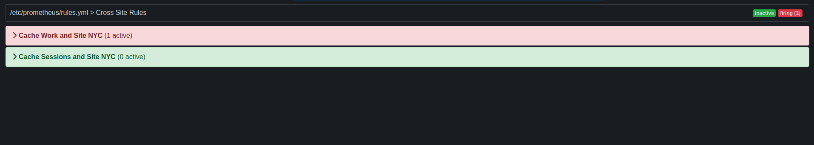

Infinispan Server runs in a dedicated Java Virtual Machine (JVM) and provides client access to remote caches through Hot Rod or REST endpoints. Infinispan Server speeds time to deployment by separating caches from application logic and offers built-in capabilities for monitoring and administration.
1. Getting started with Infinispan Server
Install the server distribution, create a user, and start your first Infinispan cluster.
Ansible collection
Automate installation of Infinispan clusters with our Ansible collection that optionally includes Keycloak caches and cross-site replication configuration. The Ansible collection also lets you inject Infinispan caches into the static configuration for each server instance during installation.
The Ansible collection for Infinispan is available from Ansible Galaxy.
1.1. Infinispan Server requirements
Infinispan Server requires a Java Virtual Machine and works with Java 17 and later.
|
Infinispan Server does not support versions prior to Java 17. However, you can use Hot Rod clients from older versions of Infinispan which still work fine with more recent servers. |
1.2. Downloading Infinispan Server distributions
The Infinispan Server distribution is an archive of Java libraries (JAR files) and configuration files.
-
Download Infinispan 15.0 Server from Infinispan downloads.
-
Run the
sha1sumcommand with the server download archive as the argument, for example:sha1sum infinispan-server-${version}.zip -
Compare with the
SHA-1checksum value on the Infinispan downloads page.
The Infinispan Server README, available in the distribution, provides example commands for running the server, describes folders in the $ISPN_HOME directory, and lists system properties you can use to customize the filesystem.
1.3. Installing Infinispan Server
Install the Infinispan Server distribution on a host system.
-
Download a Infinispan Server distribution archive.
-
Use any appropriate tool to extract the Infinispan Server archive to the host filesystem.
unzip infinispan-server-15.0.13.Final.zipThe resulting directory is your $ISPN_HOME.
1.4. JVM settings for Infinispan
You can define Java Virtual Machine (JVM) settings for Infinispan either by editing the server.conf configuration file, or by setting the JAVA_OPTS environment variable .
|
If you are running Infinispan in a container do not set |
Editing the configuration file
You can edit the required values in the server.conf configuration file. For example, to set the options to pass to the JVM, edit the following lines:
JAVA_OPTS="-Xms64m -Xmx512m -XX:MetaspaceSize=64M -Djava.net.preferIPv4Stack=true" JAVA_OPTS="$JAVA_OPTS -Djava.awt.headless=true"
You can uncomment the existing example settings as well. For example, to configure Java Platform Debugger Architecture (JPDA) settings for remote socket debugging, update the file as follows:
# Sample JPDA settings for remote socket debugging JAVA_OPTS="$JAVA_OPTS -agentlib:jdwp=transport=dt_socket,address=8787,server=y,suspend=n"
Additionally, you can add more settings to JAVA_OPTS like this:
JAVA_OPTS="$JAVA_OPTS <key_1>=<value_1>, ..., <key_N>=<value_N> "
Setting an environment variable
You can override the settings in server.conf configuration file by setting the JAVA_OPTS environment variable. For example:
export JAVA_OPTS="-Xmx1024M"
set JAVA_OPTS="-Xmx1024M"
1.5. Starting Infinispan Server
Run Infinispan Server instances in a Java Virtual Machine (JVM).
-
Download and install the server distribution.
-
Open a terminal in
$ISPN_HOME. -
Start Infinispan Server instances with the
serverscript.- Linux
-
bin/server.sh - Microsoft Windows
-
bin\server.bat
Infinispan Server is running successfully when it logs the following messages:
ISPN080004: Protocol SINGLE_PORT listening on 127.0.0.1:11222
ISPN080034: Server '...' listening on http://127.0.0.1:11222
ISPN080001: Infinispan Server <version> started in <mm>ms-
Open
127.0.0.1:11222/console/in any browser. -
Enter your credentials at the prompt and continue to Infinispan Console.
1.6. Passing Infinispan Server configuration at startup
Specify custom configuration when you start Infinispan Server.
Infinispan Server can parse multiple configuration files that you overlay on startup with the --server-config argument.
You can use as many configuration overlay files as required, in any order.
Configuration overlay files:
-
Must be valid Infinispan configuration and contain the root
serverelement or field. -
Do not need to be full configuration as long as your combination of overlay files results in a full configuration.
|
Infinispan Server does not detect conflicting configuration between overlay files. Each overlay file overwrites any conflicting configuration in the preceding configuration. |
|
If you pass cache configuration to Infinispan Server on startup it does not dynamically create those cache across the cluster. You must manually propagate caches to each node. Additionally, cache configuration that you pass to Infinispan Server on startup must include the |
-
Download and install the server distribution.
-
Add custom server configuration to the
server/confdirectory of your Infinispan Server installation.
-
Open a terminal in
$ISPN_HOME. -
Specify one or more configuration files with the
--server-config=or-cargument, for example:bin/server.sh -c infinispan.xml -c datasources.yaml -c security-realms.json
1.7. Creating Infinispan users
Add credentials to authenticate with Infinispan Server deployments through Hot Rod and REST endpoints. Before you can access the Infinispan Console or perform cache operations you must create at least one user with the Infinispan command line interface (CLI).
|
Infinispan enforces security authorization with role-based access control (RBAC).
Create an |
-
Download and install Infinispan Server.
-
Open a terminal in
$ISPN_HOME. -
Create an
adminuser, belonging to theadmingroup with theuser createcommand.bin/cli.sh user create admin -p changeme -g adminRun
help userfrom a CLI session to get complete command details.
Open user.properties and confirm the user exists.
cat server/conf/users.properties
admin=scram-sha-1\:BYGcIAwvf6b...|
Adding credentials to a properties realm with the CLI creates the user only on the server instance to which you are connected. You must manually synchronize credentials in a properties realm to each node in the cluster. |
1.7.1. Granting roles to users
Assign roles to users and grant them permissions to perform cache operations and interact with Infinispan resources.
|
Grant roles to groups instead of users if you want to assign the same role to multiple users and centrally maintain their permissions. |
-
Have
ADMINpermissions for Infinispan. -
Create Infinispan users.
-
Create a CLI connection to Infinispan.
-
Assign roles to users with the
user roles grantcommand, for example:user roles grant --roles=deployer katie
List roles that you grant to users with the user roles ls command.
user roles ls katie
["deployer"]Adding users to groups
Groups let you change permissions for multiple users. You assign a role to a group and then add users to that group. Users inherit permissions from the group role.
|
You use groups as part of a property realm in the Infinispan Server configuration. Each group is a special type of user that also requires a username and password. |
-
Have
ADMINpermissions for Infinispan. -
Create Infinispan users.
-
Create a CLI connection to Infinispan.
-
Use the
user createcommand to create a group.-
Specify a group name with the
--groupsargument. -
Set a username and password for the group.
user create --groups=developers developers -p changeme
-
-
List groups.
user ls --groups -
Grant a role to the group.
user roles grant --roles=application developers -
List roles for the group.
user roles ls developers -
Add users to the group one at a time.
user groups john --groups=developers
Open groups.properties and confirm the group exists.
cat server/conf/groups.properties1.7.2. Infinispan user roles and permissions
Infinispan includes several roles that provide users with permissions to access caches and Infinispan resources.
| Role | Permissions | Description |
|---|---|---|
|
ALL |
Superuser with all permissions including control of the Cache Manager lifecycle. |
|
ALL_READ, ALL_WRITE, LISTEN, EXEC, MONITOR, CREATE |
Can create and delete Infinispan resources in addition to |
|
ALL_READ, ALL_WRITE, LISTEN, EXEC, MONITOR |
Has read and write access to Infinispan resources in addition to |
|
ALL_READ, MONITOR |
Has read access to Infinispan resources in addition to |
|
MONITOR |
Can view statistics via JMX and the |
1.8. Verifying cluster views
Infinispan Server instances on the same network automatically discover each other and form clusters.
Complete this procedure to observe cluster discovery with the MPING protocol in the default TCP stack with locally running Infinispan Server instances.
If you want to adjust cluster transport for custom network requirements, see the documentation for setting up Infinispan clusters.
|
This procedure is intended to demonstrate the principle of cluster discovery and is not intended for production environments. Doing things like specifying a port offset on the command line is not a reliable way to configure cluster transport for production. |
Have one instance of Infinispan Server running.
-
Open a terminal in
$ISPN_HOME. -
Copy the root directory to
server2.cp -r server server2 -
Specify a port offset and the
server2directory.bin/server.sh -o 100 -s server2
You can view cluster membership in the console at 127.0.0.1:11222/console/cluster-membership.
Infinispan also logs the following messages when nodes join clusters:
INFO [org.infinispan.CLUSTER] (jgroups-11,<server_hostname>)
ISPN000094: Received new cluster view for channel cluster:
[<server_hostname>|3] (2) [<server_hostname>, <server2_hostname>]
INFO [org.infinispan.CLUSTER] (jgroups-11,<server_hostname>)
ISPN100000: Node <server2_hostname> joined the cluster1.9. Shutting down Infinispan Server
Stop individually running servers or bring down clusters gracefully.
-
Create a CLI connection to Infinispan.
-
Shut down Infinispan Server in one of the following ways:
-
Stop all nodes in a cluster with the
shutdown clustercommand, for example:shutdown clusterThis command saves cluster state to the
datafolder for each node in the cluster. If you use a cache store, theshutdown clustercommand also persists all data in the cache. -
Stop individual server instances with the
shutdown servercommand and the server hostname, for example:shutdown server <my_server01>
-
|
The |
|
Run |
Infinispan logs the following messages when you shut down servers:
ISPN080002: Infinispan Server stopping
ISPN000080: Disconnecting JGroups channel cluster
ISPN000390: Persisted state, version=<$version> timestamp=YYYY-MM-DDTHH:MM:SS
ISPN080003: Infinispan Server stopped1.9.1. Shutdown and restart of Infinispan clusters
Prevent data loss and ensure consistency of your cluster by properly shutting down and restarting nodes.
Cluster shutdown
Infinispan recommends using the shutdown cluster command to stop all nodes in a cluster while saving cluster state and persisting all data in the cache.
You can use the shutdown cluster command also for clusters with a single node.
When you bring Infinispan clusters back online, all nodes and caches in the cluster will be unavailable until all nodes rejoin. To prevent inconsistencies or data loss, Infinispan restricts access to the data stored in the cluster and modifications of the cluster state until the cluster is fully operational again. Additionally, Infinispan disables cluster rebalancing and prevents local cache stores purging on startup.
During the cluster recovery process, the coordinator node logs messages for each new node joining, indicating which nodes are available and which are still missing. Other nodes in the Infinispan cluster have the view from the time they join. You can monitor availability of caches using the Infinispan Console or REST API.
However, in cases where waiting for all nodes is not necessary nor desired, it is possible to set a cache available with the current topology. This approach is possible through the CLI, see below, or the REST API.
|
Manually installing a topology can lead to data loss, only perform this operation if the initial topology cannot be recreated. |
Server shutdown
After using the shutdown server command to bring nodes down, the first node to come back online will be available immediately without waiting for other members.
The remaining nodes join the cluster immediately, triggering state transfer but loading the local persistence first, which might lead to stale entries.
Local cache stores configured to purge on startup will be emptied when the server starts.
Local cache stores marked as purge=false will be available after a server restarts but might contain stale entries.
If you shutdown clustered nodes with the shutdown server command, you must restart each server in reverse order to avoid potential issues related to data loss and stale entries in the cache.
For example, if you shutdown server1 and then shutdown server2, you should first start server2 and then start server1.
However, restarting clustered nodes in reverse order does not completely prevent data loss and stale entries.
1.10. Infinispan Server installation directory structure
Infinispan Server uses the following folders on the host filesystem under $ISPN_HOME:
├── bin
├── boot
├── docs
├── lib
├── server
└── static|
See the Infinispan Server README, available in the distribution, for descriptions of the each folder in your |
1.10.1. Server root directory
Apart from resources in the bin and docs folders, the only folder under $ISPN_HOME that you should interact with is the server root directory, which is named server by default.
You can create multiple nodes under the same $ISPN_HOME directory or in different directories, but each Infinispan Server instance must have its own server root directory.
For example, a cluster of 5 nodes could have the following server root directories on the filesystem:
├── server
├── server1
├── server2
├── server3
└── server4Each server root directory should contain the following folders:
├── server
│ ├── conf
│ ├── data
│ ├── lib
│ └── logserver/conf
Holds infinispan.xml configuration files for a Infinispan Server instance.
Infinispan separates configuration into two layers:
- Dynamic
-
Create mutable cache configurations for data scalability.
Infinispan Server permanently saves the caches you create at runtime along with the cluster state that is distributed across nodes. Each joining node receives a complete cluster state that Infinispan Server synchronizes across all nodes whenever changes occur. - Static
-
Add configuration to
infinispan.xmlfor underlying server mechanisms such as cluster transport, security, and shared datasources.
server/data
Provides internal storage that Infinispan Server uses to maintain cluster state.
|
Never directly delete or modify content in Modifying files such as |
server/lib
Contains extension JAR files for custom filters, custom event listeners, JDBC drivers, custom ServerTask implementations, and so on.
server/log
Holds Infinispan Server log files.
2. Network interfaces and socket bindings
Expose Infinispan Server through a network interface by binding it to an IP address. You can then configure endpoints to use the interface so Infinispan Server can handle requests from remote client applications.
2.1. Network interfaces
Infinispan Server multiplexes endpoints to a single TCP/IP port and automatically detects protocols of inbound client requests. You can configure how Infinispan Server binds to network interfaces to listen for client requests.
Internet Protocol (IP) address
<server xmlns="urn:infinispan:server:15.0">
<!-- Selects a specific IPv4 address, which can be public, private, or loopback. This is the default network interface for Infinispan Server. -->
<interfaces>
<interface name="public">
<inet-address value="${infinispan.bind.address:127.0.0.1}"/>
</interface>
</interfaces>
</server>{
"server": {
"interfaces": [{
"name": "public",
"inet-address": {
"value": "127.0.0.1"
}
}]
}
}server:
interfaces:
- name: "public"
inetAddress:
value: "127.0.0.1"Loopback address
<server xmlns="urn:infinispan:server:15.0">
<!-- Selects an IP address in an IPv4 or IPv6 loopback address block. -->
<interfaces>
<interface name="public">
<loopback/>
</interface>
</interfaces>
</server>{
"server": {
"interfaces": [{
"name": "public",
"loopback": null
}]
}
}server:
interfaces:
- name: "public"
loopback: ~Non-loopback address
<server xmlns="urn:infinispan:server:15.0">
<!-- Selects an IP address in an IPv4 or IPv6 non-loopback address block. -->
<interfaces>
<interface name="public">
<non-loopback/>
</interface>
</interfaces>
</server>{
"server": {
"interfaces": [{
"name": "public",
"non_loopback": null
}]
}
}server:
interfaces:
- name: "public"
nonLoopback: ~Any address
<server xmlns="urn:infinispan:server:15.0">
<!-- Uses the `INADDR_ANY` wildcard address which means Infinispan Server listens for inbound client requests on all interfaces. -->
<interfaces>
<interface name="public">
<any-address/>
</interface>
</interfaces>
</server>{
"server": {
"interfaces": [{
"name": "public",
"any_address": null
}]
}
}server:
interfaces:
- name: "public"
anyAddress: ~Link local
<server xmlns="urn:infinispan:server:15.0">
<!-- Selects a link-local IP address in an IPv4 or IPv6 address block. -->
<interfaces>
<interface name="public">
<link-local/>
</interface>
</interfaces>
</server>{
"server": {
"interfaces": [{
"name": "public",
"link_local": null
}]
}
}server:
interfaces:
- name: "public"
linkLocal: ~Site local
<server xmlns="urn:infinispan:server:15.0">
<!-- Selects a site-local (private) IP address in an IPv4 or IPv6 address block. -->
<interfaces>
<interface name="public">
<site-local/>
</interface>
</interfaces>
</server>{
"server": {
"interfaces": [{
"name": "public",
"site_local": null
}]
}
}server:
interfaces:
- name: "public"
siteLocal: ~2.1.1. Match and fallback strategies
Infinispan Server can enumerate all network interfaces on the host system and bind to an interface, host, or IP address that matches a value, which can include regular expressions for additional flexibility.
Match host
<server xmlns="urn:infinispan:server:15.0">
<!-- Selects an IP address that is assigned to a matching host name. -->
<interfaces>
<interface name="public">
<match-host value="my_host_name"/>
</interface>
</interfaces>
</server>{
"server": {
"interfaces": [{
"name": "public",
"match-host": {
"value": "my_host_name"
}
}]
}
}server:
interfaces:
- name: "public"
matchHost:
value: "my_host_name"Match interface
<server xmlns="urn:infinispan:server:15.0">
<!--Selects an IP address assigned to a matching network interface. -->
<interfaces>
<interface name="public">
<match-interface value="eth0"/>
</interface>
</interfaces>
</server>{
"server": {
"interfaces": [{
"name": "public",
"match-interface": {
"value": "eth0"
}
}]
}
}server:
interfaces:
- name: "public"
matchInterface:
value: "eth0"Match address
<server xmlns="urn:infinispan:server:15.0">
<!-- Selects an IP address that matches a regular expression. -->
<interfaces>
<interface name="public">
<match-address value="132\..*"/>
</interface>
</interfaces>
</server>{
"server": {
"interfaces": [{
"name": "public",
"match-address": {
"value": "132\\..*"
}
}]
}
}server:
interfaces:
- name: "public"
matchAddress:
value: "127\\..*"Fallback
<server xmlns="urn:infinispan:server:15.0">
<!-- Includes multiple strategies that Infinispan Server tries in the declared order until it finds a match. -->
<interfaces>
<interface name="public">
<match-host value="my_host_name"/>
<match-address value="132\..*"/>
<any-address/>
</interface>
</interfaces>
</server>{
"server": {
"interfaces": [{
"name": "public",
"match-host": {
"value": "my_host_name"
},
"match-address": {
"value": "132\\..*"
},
"any_address": null
}]
}
}server:
interfaces:
- name: "public"
matchHost:
value: "my_host_name"
matchAddress:
value: "132\\..*"
anyAddress: ~2.2. Socket bindings
Socket bindings map endpoint connectors to network interfaces and ports.
By default, Infinispan Server includes a socket binding configuration that listens on the localhost interface, 127.0.0.1, at port 11222 for the REST and Hot Rod endpoints.
If you enable the Memcached endpoint, the default socket bindings configure Infinispan Server to bind to port 11221.
<server xmlns="urn:infinispan:server:15.0">
<socket-bindings default-interface="public"
port-offset="${infinispan.socket.binding.port-offset:0}">
<socket-binding name="default"
port="${infinispan.bind.port:11222}"/>
<socket-binding name="memcached"
port="11221"/>
</socket-bindings>
</server>| Configuration element or attribute | Description |
|---|---|
|
Root element that contains all network interfaces and ports to which Infinispan Server endpoints can bind and listen for client connections. |
|
Declare the network interface that Infinispan Server listens on by default. |
|
Specifies the offset that Infinispan Server applies to port declarations for socket bindings. |
|
Configures Infinispan Server to bind to a port on a network interface. |
Custom socket binding declarations
The following example configuration adds an interface declaration named "private" and a socket-binding declaration that binds Infinispan Server to the private IP address:
<server xmlns="urn:infinispan:server:15.0">
<interfaces>
<interface name="public">
<inet-address value="${infinispan.bind.address:127.0.0.1}"/>
</interface>
<interface name="private">
<inet-address value="10.1.2.3"/>
</interface>
</interfaces>
<socket-bindings default-interface="public"
port-offset="${infinispan.socket.binding.port-offset:0}">
<socket-binding name="private_binding"
interface="private"
port="49152"/>
</socket-bindings>
<endpoints socket-binding="private_binding"
security-realm="default"/>
</server>{
"server": {
"interfaces": [{
"name": "private",
"inet-address": {
"value": "10.1.2.3"
}
}, {
"name": "public",
"inet-address": {
"value": "127.0.0.1"
}
}],
"socket-bindings": {
"port-offset": "0",
"default-interface": "public",
"socket-binding": [{
"name": "private_binding",
"port": "1234",
"interface": "private"
}]
},
"endpoints": {
"endpoint": {
"socket-binding": "private_binding",
"security-realm": "default"
}
}
}
}server:
interfaces:
- name: "private"
inetAddress:
value: "10.1.2.3"
- name: "public"
inetAddress:
value: "127.0.0.1"
socketBindings:
portOffset: "0"
defaultInterface: "public"
socketBinding:
- name: "private_binding"
port: "49152"
interface: "private"
endpoints:
endpoint:
socketBinding: "private_binding"
securityRealm: "default"2.3. Changing the bind address for Infinispan Server
Infinispan Server binds to a network IP address to listen for inbound client connections on the Hot Rod and REST endpoints. You can specify that IP address directly in your Infinispan Server configuration or when starting server instances.
-
Have at least one Infinispan Server installation.
Specify the IP address to which Infinispan Server binds in one of the following ways:
-
Open your Infinispan Server configuration and set the value for the
inet-addresselement, for example:<server xmlns="urn:infinispan:server:15.0"> <interfaces> <interface name="custom"> <inet-address value="${infinispan.bind.address:192.0.2.0}"/> </interface> </interfaces> </server> -
Use the
-boption or theinfinispan.bind.addresssystem property.Linuxbin/server.sh -b 192.0.2.0Windowsbin\server.bat -b 192.0.2.0
2.3.1. Listening on all addresses
If you specify the 0.0.0.0 meta-address, or INADDR_ANY, as the bind address in your Infinispan Server configuration, it listens for incoming client connections on all available network interfaces.
Configuring Infinispan to listen on all addresses affects how it provides Hot Rod clients with cluster topology. If there are multiple interfaces to which Infinispan Server binds, then it sends a list of IP addresses for each interface.
For example, a cluster where each server node binds to:
-
10.0.0.0/8subnet -
192.168.0.0/16subnet -
127.0.0.1loopback
Hot Rod clients receive IP addresses for server nodes that belong to the interface through which the clients connect.
If a client connects to 192.168.0.0, for example, it does not receive any cluster topology details for nodes that listen on 10.0.0.0.
Kubernetes, and some other environments, divide the IP address space into subnets and use those different subnets as a single network.
For example, 10.129.2.100/23 and 10.129.4.100/23 are in different subnets but belong to the 10.0.0.0/8 network.
For this reason, Infinispan Server overrides netmasks that the host system provides with netmasks that follow IANA conventions for private and reserved networks:
-
IPv4:
10.0.0.0/8,100.64.0.0/10, 192.168.0.0/16`,172.16.0.0/12,169.254.0.0/16and240.0.0.0/4 -
IPv6:
fc00::/7andfe80::/10
See RFC 1112, RFC 1918, RFC 3927, RFC 6598 for IPv4 or RFC 4193, RFC 3513 for IPv6.
|
You can optionally configure the Hot Rod connector to use the netmask that the host system provides for interfaces with the |
2.4. Infinispan Server ports and protocols
Infinispan Server provides network endpoints that allow client access with different protocols.
| Port | Protocol | Description |
|---|---|---|
|
TCP |
Hot Rod and REST |
|
TCP |
Memcached (disabled by default) |
Single port
Infinispan Server exposes multiple protocols through a single TCP port, 11222.
Handling multiple protocols with a single port simplifies configuration and reduces management complexity when deploying Infinispan clusters.
Using a single port also enhances security by minimizing the attack surface on the network.
Infinispan Server handles HTTP/1.1, HTTP/2, and Hot Rod protocol requests from clients via the single port in different ways.
Client requests can include the HTTP/1.1 upgrade header field to initiate
HTTP/1.1 connections with Infinispan Server.
Client applications can then send the Upgrade: protocol header field, where protocol is a server endpoint.
Client requests include Server Name Indication (SNI) mappings for Infinispan Server endpoints to negotiate protocols over a TLS connection.
Client requests that include Hot Rod headers automatically route to Hot Rod endpoints.
2.4.1. Configuring network firewalls for Infinispan traffic
Adjust firewall rules to allow traffic between Infinispan Server and client applications.
On Red Hat Enterprise Linux (RHEL) workstations, for example, you can allow
traffic to port 11222 with firewalld as follows:
# firewall-cmd --add-port=11222/tcp --permanent
success
# firewall-cmd --list-ports | grep 11222
11222/tcpTo configure firewall rules that apply across a network, you can use the nftables utility.
2.5. Specifying port offsets
Configure port offsets for multiple Infinispan Server instances on the same host.
The default port offset is 0.
Use the -o switch with the Infinispan CLI or the
infinispan.socket.binding.port-offset system property to set port offsets.
For example, start a server instance with an offset of 100 as follows. With the default configuration, this results in the Infinispan server listening on port 11322.
- Linux
bin/server.sh -o 100- Windows
bin\server.bat -o 1003. Infinispan Server endpoints
Infinispan Server endpoints provide client access to the cache manager over Hot Rod and REST protocols.
3.1. Infinispan Server endpoints
3.1.1. Hot Rod
Hot Rod is a binary TCP client-server protocol designed to provide faster data access and improved performance in comparison to text-based protocols.
Infinispan provides Hot Rod client libraries in Java, C++, C#, Node.js and other programming languages.
Infinispan uses topology caches to provide clients with cluster views. Topology caches contain entries that map internal JGroups transport addresses to exposed Hot Rod endpoints.
When client send requests, Infinispan servers compare the topology ID in request headers with the topology ID from the cache. Infinispan servers send new topology views if client have older topology IDs.
Cluster topology views allow Hot Rod clients to immediately detect when nodes join and leave, which enables dynamic load balancing and failover.
In distributed cache modes, the consistent hashing algorithm also makes it possible to route Hot Rod client requests directly to primary owners.
3.1.2. REST
Infinispan exposes a RESTful interface that allows HTTP clients to access data, monitor and maintain clusters, and perform administrative operations.
You can use standard HTTP load balancers to provide clients with load balancing and failover capabilities. However, HTTP load balancers maintain static cluster views and require manual updates when cluster topology changes occur.
3.1.3. RESP
Infinispan provides an implementation of the RESP3 protocol.
The RESP connector supports a subset of the Redis commands.
3.1.4. Memcached
Infinispan provides an implementation of the Memcached text and binary protocols for remote client access.
The Infinispan Memcached endpoint supports clustering with replicated and distributed cache modes.
There are some Memcached client implementations, such as the Cache::Memcached Perl client, that can offer load balancing and failover detection capabilities with static lists of Infinispan server addresses that require manual updates when cluster topology changes occur.
3.1.5. Comparison of endpoint protocols
| Hot Rod | HTTP / REST | Memcached | RESP | |
|---|---|---|---|---|
Topology-aware |
Y |
N |
N |
N |
Hash-aware |
Y |
N |
N |
N |
Encryption |
Y |
Y |
Y |
Y |
Authentication |
Y |
Y |
Y |
Y |
Conditional ops |
Y |
Y |
Y |
N |
Bulk ops |
Y |
N |
Y |
Y |
Transactions |
Y |
N |
N |
N |
Listeners |
Y |
N |
N |
Y |
Query |
Y |
Y |
N |
N |
Execution |
Y |
N |
N |
N |
Cross-site failover |
Y |
N |
N |
N |
3.1.6. Hot Rod client compatibility with Infinispan Server
Infinispan Server allows you to connect Hot Rod clients with different versions. For instance during a migration or upgrade to your Infinispan cluster, the Hot Rod client version might be a lower Infinispan version than Infinispan Server.
|
Infinispan recommends using the latest Hot Rod client version to benefit from the most recent capabilities and security enhancements. |
Hot Rod protocol version 3.x automatically negotiates the highest version possible for clients with Infinispan Server.
Clients that use a Hot Rod protocol version that is higher than the Infinispan Server version must set the infinispan.client.hotrod.protocol_version property.
3.2. Configuring Infinispan Server endpoints
Control how the different protocol endpoints bind to sockets and use security realm configuration. You can also configure multiple endpoints and disable administrative capabilities.
|
Each unique endpoint configuration must include both a Hot Rod connector and a REST connector.
Infinispan Server implicitly includes the |
-
Add socket bindings and security realms to your Infinispan Server configuration.
-
Open your Infinispan Server configuration for editing.
-
Wrap multiple
endpointconfigurations with theendpointselement. -
Specify the socket binding that the endpoint uses with the
socket-bindingattribute. -
Specify the security realm that the endpoint uses with the
security-realmattribute. -
Disable administrator access with the
admin="false"attribute, if required.With this configuration users cannot access Infinispan Console or the Command Line Interface (CLI) from the endpoint.
-
Save the changes to your configuration.
Multiple endpoint configuration
The following Infinispan Server configuration creates endpoints on separate socket bindings with dedicated security realms:
<server xmlns="urn:infinispan:server:15.0">
<endpoints>
<endpoint socket-binding="public"
security-realm="application-realm"
admin="false">
</endpoint>
<endpoint socket-binding="private"
security-realm="management-realm">
</endpoint>
</endpoints>
</server>{
"server": {
"endpoints": [{
"socket-binding": "private",
"security-realm": "private-realm"
}, {
"socket-binding": "public",
"security-realm": "default",
"admin": "false"
}]
}
}server:
endpoints:
- socketBinding: public
securityRealm: application-realm
admin: false
- socketBinding: private
securityRealm: management-realm3.3. Endpoint connectors
Connectors configure Hot Rod and REST endpoints to use socket bindings and security realms.
<endpoints socket-binding="default" security-realm="default"/>| Configuration element or attribute | Description |
|---|---|
|
Wraps endpoint connector configuration. |
|
Declares a Infinispan Server endpoint that configures Hot Rod and REST connectors to use a socket binding and security realm. |
|
Includes the Hot Rod endpoint in the |
|
Includes the REST endpoint in the |
|
Includes the RESP endpoint in the |
|
Includes the Memcached endpoint in the |
3.4. Endpoint IP address filtering rules
Infinispan Server endpoints can use filtering rules that control whether clients can connect based on their IP addresses. Infinispan Server applies filtering rules in order until it finds a match for the client IP address.
A CIDR block is a compact representation of an IP address and its associated network mask. CIDR notation specifies an IP address, a slash ('/') character, and a decimal number. The decimal number is the count of leading 1 bits in the network mask. The number can also be thought of as the width, in bits, of the network prefix. The IP address in CIDR notation is always represented according to the standards for IPv4 or IPv6.
The address can denote a specific interface address, including a host identifier, such as 10.0.0.1/8, or it can be the beginning address of an entire network interface range using a host identifier of 0, as in 10.0.0.0/8 or 10/8.
For example:
-
192.168.100.14/24represents the IPv4 address192.168.100.14and its associated network prefix192.168.100.0, or equivalently, its subnet mask255.255.255.0, which has 24 leading 1-bits. -
the IPv4 block
192.168.100.0/22represents the 1024 IPv4 addresses from192.168.100.0to192.168.103.255. -
the IPv6 block
2001:db8::/48represents the block of IPv6 addresses from2001:db8:0:0:0:0:0:0to2001:db8:0:ffff:ffff:ffff:ffff:ffff. -
::1/128represents the IPv6 loopback address. Its prefix length is 128 which is the number of bits in the address.
IP address filter configuration
In the following configuration, Infinispan Server accepts connections only from addresses in the 192.168.0.0/16 and 10.0.0.0/8 CIDR blocks.
Infinispan Server rejects all other connections.
<server xmlns="urn:infinispan:server:15.0">
<endpoints>
<endpoint socket-binding="default" security-realm="default">
<ip-filter>
<accept from="192.168.0.0/16"/>
<accept from="10.0.0.0/8"/>
<reject from="/0"/>
</ip-filter>
</endpoint>
</endpoints>
</server>{
"server": {
"endpoints": {
"endpoint": {
"socket-binding": "default",
"security-realm": "default",
"ip-filter": {
"accept-from": ["192.168.0.0/16", "10.0.0.0/8"],
"reject-from": "/0"
}
}
}
}
}server:
endpoints:
endpoint:
socketBinding: "default"
securityRealm: "default"
ipFilter:
acceptFrom: ["192.168.0.0/16","10.0.0.0/8"]
rejectFrom: "/0"3.5. Inspecting and modifying rules for filtering IP addresses
Configure IP address filtering rules on Infinispan Server endpoints to accept or reject connections based on client address.
-
Install Infinispan Command Line Interface (CLI).
-
Create a CLI connection to Infinispan Server.
-
Inspect and modify the IP filter rules
server connector ipfiltercommand as required.-
List all IP filtering rules active on a connector across the cluster:
server connector ipfilter ls endpoint-default -
Set IP filtering rules across the cluster.
This command replaces any existing rules.
server connector ipfilter set endpoint-default --rules=ACCEPT/192.168.0.0/16,REJECT/10.0.0.0/8` -
Remove all IP filtering rules on a connector across the cluster.
server connector ipfilter clear endpoint-default
-
4. Endpoint authentication mechanisms
Infinispan Server can use custom SASL and HTTP authentication mechanisms for Hot Rod and REST endpoints.
4.1. Infinispan Server authentication
Authentication restricts user access to endpoints as well as the Infinispan Console and Command Line Interface (CLI).
Infinispan Server includes a "default" security realm that enforces user authentication.
Default authentication uses a property realm with user credentials stored in the server/conf/users.properties file.
Infinispan Server also enables security authorization by default so you must assign users with permissions stored in the server/conf/groups.properties file.
|
Use the |
4.2. Configuring Infinispan Server authentication mechanisms
You can explicitly configure Hot Rod and REST endpoints to use specific authentication mechanisms. Configuring authentication mechanisms is required only if you need to explicitly override the default mechanisms for a security realm.
|
Each |
-
Add security realms to your Infinispan Server configuration as required.
-
Open your Infinispan Server configuration for editing.
-
Add an
endpointelement or field and specify the security realm that it uses with thesecurity-realmattribute. -
Add a
hotrod-connectorelement or field to configure the Hot Rod endpoint.-
Add an
authenticationelement or field. -
Specify SASL authentication mechanisms for the Hot Rod endpoint to use with the
sasl mechanismsattribute. -
If applicable, specify SASL quality of protection settings with the
qopattribute. -
Specify the Infinispan Server identity with the
server-nameattribute if necessary.
-
-
Add a
rest-connectorelement or field to configure the REST endpoint.-
Add an
authenticationelement or field. -
Specify HTTP authentication mechanisms for the REST endpoint to use with the
mechanismsattribute.
-
-
Save the changes to your configuration.
Authentication mechanism configuration
The following configuration specifies SASL mechanisms for the Hot Rod endpoint to use for authentication:
<server xmlns="urn:infinispan:server:15.0">
<endpoints>
<endpoint socket-binding="default"
security-realm="my-realm">
<hotrod-connector>
<authentication>
<sasl mechanisms="SCRAM-SHA-512 SCRAM-SHA-384 SCRAM-SHA-256
SCRAM-SHA-1 DIGEST-SHA-512 DIGEST-SHA-384
DIGEST-SHA-256 DIGEST-SHA DIGEST-MD5 PLAIN"
server-name="infinispan"
qop="auth"/>
</authentication>
</hotrod-connector>
<rest-connector>
<authentication mechanisms="DIGEST BASIC"/>
</rest-connector>
</endpoint>
</endpoints>
</server>{
"server": {
"endpoints": {
"endpoint": {
"socket-binding": "default",
"security-realm": "my-realm",
"hotrod-connector": {
"authentication": {
"security-realm": "default",
"sasl": {
"server-name": "infinispan",
"mechanisms": ["SCRAM-SHA-512", "SCRAM-SHA-384", "SCRAM-SHA-256", "SCRAM-SHA-1", "DIGEST-SHA-512", "DIGEST-SHA-384", "DIGEST-SHA-256", "DIGEST-SHA", "DIGEST-MD5", "PLAIN"],
"qop": ["auth"]
}
}
},
"rest-connector": {
"authentication": {
"mechanisms": ["DIGEST", "BASIC"],
"security-realm": "default"
}
}
}
}
}
}server:
endpoints:
endpoint:
socketBinding: "default"
securityRealm: "my-realm"
hotrodConnector:
authentication:
securityRealm: "default"
sasl:
serverName: "infinispan"
mechanisms:
- "SCRAM-SHA-512"
- "SCRAM-SHA-384"
- "SCRAM-SHA-256"
- "SCRAM-SHA-1"
- "DIGEST-SHA-512"
- "DIGEST-SHA-384"
- "DIGEST-SHA-256"
- "DIGEST-SHA"
- "DIGEST-MD5"
- "PLAIN"
qop:
- "auth"
restConnector:
authentication:
mechanisms:
- "DIGEST"
- "BASIC"
securityRealm: "default"4.2.1. Disabling authentication
In local development environments or on isolated networks you can configure Infinispan to allow unauthenticated client requests. When you disable user authentication you should also disable authorization in your Infinispan security configuration.
-
Open your Infinispan Server configuration for editing.
-
Remove the
security-realmattribute from theendpointselement or field. -
Remove any
authorizationelements from thesecurityconfiguration for thecache-containerand each cache configuration. -
Save the changes to your configuration.
<server xmlns="urn:infinispan:server:15.0">
<endpoints socket-binding="default"/>
</server>{
"server": {
"endpoints": {
"endpoint": {
"socket-binding": "default"
}
}
}
}server:
endpoints:
endpoint:
socketBinding: "default"4.3. Infinispan Server authentication mechanisms
Infinispan Server automatically configures endpoints with authentication mechanisms that match your security realm configuration.
For example, if you add a Kerberos security realm then Infinispan Server enables the GSSAPI and GS2-KRB5 authentication mechanisms for the Hot Rod endpoint.
|
Currently, you cannot use the Lightweight Directory Access Protocol (LDAP) protocol with the |
Infinispan Server enables the following SASL authentication mechanisms for Hot Rod endpoints when your configuration includes the corresponding security realm:
| Security realm | SASL authentication mechanism |
|---|---|
Property realms and LDAP realms |
|
Token realms |
|
Trust realms |
|
Kerberos identities |
|
SSL/TLS identities |
|
Infinispan Server enables the following HTTP authentication mechanisms for REST endpoints when your configuration includes the corresponding security realm:
| Security realm | HTTP authentication mechanism |
|---|---|
Property realms and LDAP realms |
|
Token realms |
|
Trust realms |
|
Kerberos identities |
|
SSL/TLS identities |
|
Infinispan Server enables the following SASL authentication mechanisms for Memcached binary protocol endpoints when your configuration includes the corresponding security realm:
| Security realm | SASL authentication mechanism |
|---|---|
Property realms and LDAP realms |
|
Token realms |
|
Trust realms |
|
Kerberos identities |
|
SSL/TLS identities |
|
Infinispan Server enables authentication on Memcached text protocol endpoints only with security realms which support password-based authentication:
| Security realm | Memcached text authentication |
|---|---|
Property realms and LDAP realms |
Yes |
Token realms |
No |
Trust realms |
No |
Kerberos identities |
No |
SSL/TLS identities |
No |
Infinispan Server enables authentication on RESP endpoints only with security realms which support password-based authentication:
| Security realm | RESP authentication |
|---|---|
Property realms and LDAP realms |
Yes |
Token realms |
No |
Trust realms |
No |
Kerberos identities |
No |
SSL/TLS identities |
No |
4.3.1. SASL authentication mechanisms
Infinispan Server supports the following SASL authentications mechanisms with Hot Rod and Memcached binary protocol endpoints:
| Authentication mechanism | Description | Security realm type | Related details |
|---|---|---|---|
|
Uses credentials in plain-text format. You should use |
Property realms and LDAP realms |
Similar to the |
|
Uses hashing algorithms and nonce values. Hot Rod connectors support |
Property realms and LDAP realms |
Similar to the |
|
Uses salt values in addition to hashing algorithms and nonce values. Hot Rod connectors support |
Property realms and LDAP realms |
Similar to the |
|
Uses Kerberos tickets and requires a Kerberos Domain Controller. You must add a corresponding |
Kerberos realms |
Similar to the |
|
Uses Kerberos tickets and requires a Kerberos Domain Controller. You must add a corresponding |
Kerberos realms |
Similar to the |
|
Uses client certificates. |
Trust store realms |
Similar to the |
|
Uses OAuth tokens and requires a |
Token realms |
Similar to the |
4.3.2. SASL quality of protection (QoP)
If SASL mechanisms support integrity and privacy protection (QoP) settings, you can add them to your Hot Rod and Memcached endpoint configuration with the qop attribute.
| QoP setting | Description |
|---|---|
|
Authentication only. |
|
Authentication with integrity protection. |
|
Authentication with integrity and privacy protection. |
4.3.3. SASL policies
SASL policies provide fine-grain control over Hot Rod and Memcached authentication mechanisms.
|
Infinispan cache authorization restricts access to caches based on roles and
permissions.
Configure cache authorization and then set |
| Policy | Description | Default value |
|---|---|---|
|
Use only SASL mechanisms that support forward secrecy between sessions. This means that breaking into one session does not automatically provide information for breaking into future sessions. |
false |
|
Use only SASL mechanisms that require client credentials. |
false |
|
Do not use SASL mechanisms that are susceptible to simple plain passive attacks. |
false |
|
Do not use SASL mechanisms that are susceptible to active, non-dictionary, attacks. |
false |
|
Do not use SASL mechanisms that are susceptible to passive dictionary attacks. |
false |
|
Do not use SASL mechanisms that accept anonymous logins. |
true |
SASL policy configuration
In the following configuration the Hot Rod endpoint uses the GSSAPI mechanism for authentication because it is the only mechanism that complies with all SASL policies:
<server xmlns="urn:infinispan:server:15.0">
<endpoints>
<endpoint socket-binding="default"
security-realm="default">
<hotrod-connector>
<authentication>
<sasl mechanisms="PLAIN DIGEST-MD5 GSSAPI EXTERNAL"
server-name="infinispan"
qop="auth"
policy="no-active no-plain-text"/>
</authentication>
</hotrod-connector>
<rest-connector/>
</endpoint>
</endpoints>
</server>{
"server": {
"endpoints" : {
"endpoint" : {
"socket-binding" : "default",
"security-realm" : "default",
"hotrod-connector" : {
"authentication" : {
"sasl" : {
"server-name" : "infinispan",
"mechanisms" : [ "PLAIN","DIGEST-MD5","GSSAPI","EXTERNAL" ],
"qop" : [ "auth" ],
"policy" : [ "no-active","no-plain-text" ]
}
}
},
"rest-connector" : ""
}
}
}
}server:
endpoints:
endpoint:
socketBinding: "default"
securityRealm: "default"
hotrodConnector:
authentication:
sasl:
serverName: "infinispan"
mechanisms:
- "PLAIN"
- "DIGEST-MD5"
- "GSSAPI"
- "EXTERNAL"
qop:
- "auth"
policy:
- "no-active"
- "no-plain-text"
restConnector: ~4.3.4. HTTP authentication mechanisms
Infinispan Server supports the following HTTP authentication mechanisms with REST endpoints:
| Authentication mechanism | Description | Security realm type | Related details |
|---|---|---|---|
|
Uses credentials in plain-text format. You should use |
Property realms and LDAP realms |
Corresponds to the |
|
Uses hashing algorithms and nonce values. REST connectors support |
Property realms and LDAP realms |
Corresponds to the |
|
Uses Kerberos tickets and requires a Kerberos Domain Controller. You must add a corresponding |
Kerberos realms |
Corresponds to the |
|
Uses OAuth tokens and requires a |
Token realms |
Corresponds to the |
|
Uses client certificates. |
Trust store realms |
Similar to the |
5. Security realms
Security realms integrate Infinispan Server deployments with the network protocols and infrastructure in your environment that control access and verify user identities.
5.1. Creating security realms
Add security realms to Infinispan Server configuration to control access to deployments. You can add one or more security realm to your configuration.
|
When you add security realms to your configuration, Infinispan Server automatically enables the matching authentication mechanisms for the Hot Rod and REST endpoints. |
-
Add socket bindings to your Infinispan Server configuration as required.
-
Create keystores, or have a PEM file, to configure the security realm with TLS/SSL encryption.
Infinispan Server can also generate keystores at startup.
-
Provision the resources or services that the security realm configuration relies on.
For example, if you add a token realm, you need to provision OAuth services.
This procedure demonstrates how to configure multiple property realms.
Before you begin, you need to create properties files that add users and assign permissions with the Command Line Interface (CLI).
Use the user create commands as follows:
user create <username> -p <changeme> -g <role> \
--users-file=application-users.properties \
--groups-file=application-groups.properties
user create <username> -p <changeme> -g <role> \
--users-file=management-users.properties \
--groups-file=management-groups.properties|
Run |
|
Adding credentials to a properties realm with the CLI creates the user only on the server instance to which you are connected. You must manually synchronize credentials in a properties realm to each node in the cluster. |
-
Open your Infinispan Server configuration for editing.
-
Use the
security-realmselement in thesecurityconfiguration to contain create multiple security realms. -
Add a security realm with the
security-realmelement and give it a unique name with thenameattribute.To follow the example, create one security realm named
application-realmand another namedmanagement-realm. -
Provide the TLS/SSL identify for Infinispan Server with the
server-identitieselement and configure a keystore as required. -
Specify the type of security realm by adding one the following elements or fields:
-
properties-realm -
ldap-realm -
token-realm -
truststore-realm
-
-
Specify properties for the type of security realm you are configuring as appropriate.
To follow the example, specify the
*.propertiesfiles you created with the CLI using thepathattribute on theuser-propertiesandgroup-propertieselements or fields. -
If you add multiple different types of security realm to your configuration, include the
distributed-realmelement or field so that Infinispan Server uses the realms in combination with each other. -
Configure Infinispan Server endpoints to use the security realm with the with the
security-realmattribute. -
Save the changes to your configuration.
Multiple property realms
<server xmlns="urn:infinispan:server:15.0">
<security>
<security-realms>
<security-realm name="application-realm">
<properties-realm groups-attribute="Roles">
<user-properties path="application-users.properties"/>
<group-properties path="application-groups.properties"/>
</properties-realm>
</security-realm>
<security-realm name="management-realm">
<properties-realm groups-attribute="Roles">
<user-properties path="management-users.properties"/>
<group-properties path="management-groups.properties"/>
</properties-realm>
</security-realm>
</security-realms>
</security>
</server>{
"server": {
"security": {
"security-realms": [{
"name": "management-realm",
"properties-realm": {
"groups-attribute": "Roles",
"user-properties": {
"digest-realm-name": "management-realm",
"path": "management-users.properties"
},
"group-properties": {
"path": "management-groups.properties"
}
}
}, {
"name": "application-realm",
"properties-realm": {
"groups-attribute": "Roles",
"user-properties": {
"digest-realm-name": "application-realm",
"path": "application-users.properties"
},
"group-properties": {
"path": "application-groups.properties"
}
}
}]
}
}
}server:
security:
securityRealms:
- name: "management-realm"
propertiesRealm:
groupsAttribute: "Roles"
userProperties:
digestRealmName: "management-realm"
path: "management-users.properties"
groupProperties:
path: "management-groups.properties"
- name: "application-realm"
propertiesRealm:
groupsAttribute: "Roles"
userProperties:
digestRealmName: "application-realm"
path: "application-users.properties"
groupProperties:
path: "application-groups.properties"5.2. Setting up Kerberos identities
Add Kerberos identities to a security realm in your Infinispan Server configuration to use keytab files that contain service principal names and encrypted keys, derived from Kerberos passwords.
-
Have Kerberos service account principals.
|
keytab files can contain both user and service account principals. However, Infinispan Server uses service account principals only which means it can provide identity to clients and allow clients to authenticate with Kerberos servers. |
In most cases, you create unique principals for the Hot Rod and REST endpoints. For example, if you have a "datagrid" server in the "INFINISPAN.ORG" domain you should create the following service principals:
-
hotrod/datagrid@INFINISPAN.ORGidentifies the Hot Rod service. -
HTTP/datagrid@INFINISPAN.ORGidentifies the REST service.
-
Create keytab files for the Hot Rod and REST services.
- Linux
-
ktutil ktutil: addent -password -p datagrid@INFINISPAN.ORG -k 1 -e aes256-cts Password for datagrid@INFINISPAN.ORG: [enter your password] ktutil: wkt http.keytab ktutil: quit - Microsoft Windows
-
ktpass -princ HTTP/datagrid@INFINISPAN.ORG -pass * -mapuser INFINISPAN\USER_NAME ktab -k http.keytab -a HTTP/datagrid@INFINISPAN.ORG
-
Copy the keytab files to the
server/confdirectory of your Infinispan Server installation. -
Open your Infinispan Server configuration for editing.
-
Add a
server-identitiesdefinition to the Infinispan server security realm. -
Specify the location of keytab files that provide service principals to Hot Rod and REST connectors.
-
Name the Kerberos service principals.
-
Save the changes to your configuration.
Kerberos identity configuration
<server xmlns="urn:infinispan:server:15.0">
<security>
<security-realms>
<security-realm name="kerberos-realm">
<server-identities>
<!-- Specifies a keytab file that provides a Kerberos identity. -->
<!-- Names the Kerberos service principal for the Hot Rod endpoint. -->
<!-- The required="true" attribute specifies that the keytab file must be present when the server starts. -->
<kerberos keytab-path="hotrod.keytab"
principal="hotrod/datagrid@INFINISPAN.ORG"
required="true"/>
<!-- Specifies a keytab file and names the Kerberos service principal for the REST endpoint. -->
<kerberos keytab-path="http.keytab"
principal="HTTP/localhost@INFINISPAN.ORG"
required="true"/>
</server-identities>
</security-realm>
</security-realms>
</security>
<endpoints>
<endpoint socket-binding="default"
security-realm="kerberos-realm">
<hotrod-connector>
<authentication>
<sasl server-name="datagrid"
server-principal="hotrod/datagrid@INFINISPAN.ORG"/>
</authentication>
</hotrod-connector>
<rest-connector>
<authentication server-principal="HTTP/localhost@INFINISPAN.ORG"/>
</rest-connector>
</endpoint>
</endpoints>
</server>{
"server": {
"security": {
"security-realms": [{
"name": "kerberos-realm",
"server-identities": [{
"kerberos": {
"principal": "hotrod/datagrid@INFINISPAN.ORG",
"keytab-path": "hotrod.keytab",
"required": true
},
"kerberos": {
"principal": "HTTP/localhost@INFINISPAN.ORG",
"keytab-path": "http.keytab",
"required": true
}
}]
}]
},
"endpoints": {
"endpoint": {
"socket-binding": "default",
"security-realm": "kerberos-realm",
"hotrod-connector": {
"authentication": {
"security-realm": "kerberos-realm",
"sasl": {
"server-name": "datagrid",
"server-principal": "hotrod/datagrid@INFINISPAN.ORG"
}
}
},
"rest-connector": {
"authentication": {
"server-principal": "HTTP/localhost@INFINISPAN.ORG"
}
}
}
}
}
}server:
security:
securityRealms:
- name: "kerberos-realm"
serverIdentities:
- kerberos:
principal: "hotrod/datagrid@INFINISPAN.ORG"
keytabPath: "hotrod.keytab"
required: "true"
- kerberos:
principal: "HTTP/localhost@INFINISPAN.ORG"
keytabPath: "http.keytab"
required: "true"
endpoints:
endpoint:
socketBinding: "default"
securityRealm: "kerberos-realm"
hotrodConnector:
authentication:
sasl:
serverName: "datagrid"
serverPrincipal: "hotrod/datagrid@INFINISPAN.ORG"
restConnector:
authentication:
securityRealm: "kerberos-realm"
serverPrincipal" : "HTTP/localhost@INFINISPAN.ORG"5.3. Property realms
Property realms use property files to define users and groups.
-
users.propertiescontains Infinispan user credentials. Passwords can be pre-digested with theDIGEST-MD5andDIGESTauthentication mechanisms. -
groups.propertiesassociates users with roles and permissions.
myuser=a_password
user2=another_passwordmyuser=supervisor,reader,writer
user2=supervisorProperty realm configuration
<server xmlns="urn:infinispan:server:15.0">
<security>
<security-realms>
<security-realm name="default">
<!-- groups-attribute configures the "groups.properties" file to contain security authorization roles. -->
<properties-realm groups-attribute="Roles">
<user-properties path="users.properties"
relative-to="infinispan.server.config.path"
plain-text="true"/>
<group-properties path="groups.properties"
relative-to="infinispan.server.config.path"/>
</properties-realm>
</security-realm>
</security-realms>
</security>
</server>{
"server": {
"security": {
"security-realms": [{
"name": "default",
"properties-realm": {
"groups-attribute": "Roles",
"user-properties": {
"digest-realm-name": "default",
"path": "users.properties",
"relative-to": "infinispan.server.config.path",
"plain-text": true
},
"group-properties": {
"path": "groups.properties",
"relative-to": "infinispan.server.config.path"
}
}
}]
}
}
}server:
security:
securityRealms:
- name: "default"
propertiesRealm:
# groupsAttribute configures the "groups.properties" file
# to contain security authorization roles.
groupsAttribute: "Roles"
userProperties:
digestRealmName: "default"
path: "users.properties"
relative-to: 'infinispan.server.config.path'
plainText: "true"
groupProperties:
path: "groups.properties"
relative-to: 'infinispan.server.config.path'5.3.1. Property realm file structure
User properties files are structured as follows:
#$REALM_NAME=default$
#$ALGORITHM=encrypted$
#Wed Jul 31 08:32:08 CEST 2024
admin=algorithm-1\:hash-1;algorithm-2\:hash-2;...The first three lines are special comments that define the name of the realm ($REALM_NAME), whether the passwords are
stored in clear or encrypted format ($ALGORITHM) and the timestamp of the last update.
User credentials are stored in traditional key/value format: the key corresponds to the username and the value corresponds to the password. Encrypted passwords are represented as semi-colon-separated algorithm/hash pairs, with the hash encoded in Base64.
|
Credentials are encrypted using the realm name. Changing a realm’s name requires re-encrypting all the passwords. Use the Infinispan CLI to enter the correct security realm name to the file. |
5.4. LDAP realms
LDAP realms connect to LDAP servers, such as OpenLDAP, Red Hat Directory Server, Apache Directory Server, or Microsoft Active Directory, to authenticate users and obtain membership information.
|
LDAP servers can have different entry layouts, depending on the type of server and deployment. It is beyond the scope of this document to provide examples for all possible configurations. |
5.4.1. LDAP connection properties
Specify the LDAP connection properties in the LDAP realm configuration.
The following properties are required:
| url |
Specifies the URL of the LDAP server. The URL should be in format |
| principal |
Specifies a distinguished name (DN) of a valid user in the LDAp server. The DN uniquely identifies the user within the LDAP directory structure. |
| credential |
Corresponds to the password associated with the principal mentioned above. |
|
The principal for LDAP connections must have necessary privileges to perform LDAP queries and access specific attributes. |
|
Enabling |
5.4.2. LDAP realm user authentication methods
Configure the user authentication method in the LDAP realm.
The LDAP realm can authenticate users in two ways:
| Hashed password comparison |
by comparing the hashed password stored in a user’s password attribute (usually |
| Direct verification |
by authenticating against the LDAP server using the supplied credentials Direct verification is the only approach that works with Active Directory, because access to the |
|
You cannot use endpoint authentication mechanisms that performs hashing with the |
The LDAP realm searches the directory to find the entry which corresponds to the authenticated user.
The rdn-identifier attribute specifies an LDAP attribute that finds the user entry based on a provided identifier, which is typically a username; for example, the uid or sAMAccountName attribute.
Add search-recursive="true" to the configuration to search the directory recursively.
By default, the search for the user entry uses the (rdn_identifier={0}) filter.
You can specify a different filter using the filter-name attribute.
5.4.3. Mapping user entries to their associated groups
In the LDAP realm configuration, specify the attribute-mapping element to retrieve and associate all groups that a user is a member of.
The membership information is stored typically in two ways:
-
Under group entries that usually have class
groupOfNamesorgroupOfUniqueNamesin thememberattribute. This is the default behavior in most LDAP installations, except for Active Directory. In this case, you can use an attribute filter. This filter searches for entries that match the supplied filter, which locates groups with amemberattribute equal to the user’s DN. The filter then extracts the group entry’s CN as specified byfrom, and adds it to the user’sRoles. -
In the user entry in the
memberOfattribute. This is typically the case for Active Directory. In this case you should use an attribute reference such as the following:<attribute-reference reference="memberOf" from="cn" to="Roles" />This reference gets all
memberOfattributes from the user’s entry, extracts the CN as specified byfrom, and adds them to the user’s groups (Rolesis the internal name used to map the groups).
5.4.4. LDAP realm configuration reference
<server xmlns="urn:infinispan:server:15.0">
<security>
<security-realms>
<security-realm name="ldap-realm">
<!-- Specifies connection properties. -->
<ldap-realm url="ldap://my-ldap-server:10389"
principal="uid=admin,ou=People,dc=infinispan,dc=org"
credential="strongPassword"
connection-timeout="3000"
read-timeout="30000"
connection-pooling="true"
referral-mode="ignore"
page-size="30"
direct-verification="true">
<!-- Defines how principals are mapped to LDAP entries. -->
<identity-mapping rdn-identifier="uid"
search-dn="ou=People,dc=infinispan,dc=org"
search-recursive="false">
<!-- Retrieves all the groups of which the user is a member. -->
<attribute-mapping>
<attribute from="cn" to="Roles"
filter="(&(objectClass=groupOfNames)(member={1}))"
filter-dn="ou=Roles,dc=infinispan,dc=org"/>
</attribute-mapping>
</identity-mapping>
</ldap-realm>
</security-realm>
</security-realms>
</security>
</server>{
"server": {
"security": {
"security-realms": [{
"name": "ldap-realm",
"ldap-realm": {
"url": "ldap://my-ldap-server:10389",
"principal": "uid=admin,ou=People,dc=infinispan,dc=org",
"credential": "strongPassword",
"connection-timeout": "3000",
"read-timeout": "30000",
"connection-pooling": "true",
"referral-mode": "ignore",
"page-size": "30",
"direct-verification": "true",
"identity-mapping": {
"rdn-identifier": "uid",
"search-dn": "ou=People,dc=infinispan,dc=org",
"search-recursive": "false",
"attribute-mapping": [{
"from": "cn",
"to": "Roles",
"filter": "(&(objectClass=groupOfNames)(member={1}))",
"filter-dn": "ou=Roles,dc=infinispan,dc=org"
}]
}
}
}]
}
}
}server:
security:
securityRealms:
- name: ldap-realm
ldapRealm:
url: 'ldap://my-ldap-server:10389'
principal: 'uid=admin,ou=People,dc=infinispan,dc=org'
credential: strongPassword
connectionTimeout: '3000'
readTimeout: '30000'
connectionPooling: true
referralMode: ignore
pageSize: '30'
directVerification: true
identityMapping:
rdnIdentifier: uid
searchDn: 'ou=People,dc=infinispan,dc=org'
searchRecursive: false
attributeMapping:
- filter: '(&(objectClass=groupOfNames)(member={1}))'
filterDn: 'ou=Roles,dc=infinispan,dc=org'
from: cn
to: RolesLDAP realm principal rewriting
Principals obtained by SASL authentication mechanisms such as GSSAPI, GS2-KRB5 and Negotiate usually include the domain name, for example myuser@INFINISPAN.ORG.
Before using these principals in LDAP queries, it is necessary to transform them to ensure their compatibility.
This process is called rewriting.
Infinispan includes the following transformers:
| case-principal-transformer |
rewrites the principal to either all uppercase or all lowercase. For example |
| common-name-principal-transformer |
rewrites principals in the LDAP Distinguished Name format (as defined by RFC 4514). It extracts the first attribute of type |
| regex-principal-transformer |
rewrites principals using a regular expression with capturing groups, allowing, for example, for extractions of any substring. |
LDAP principal rewriting configuration reference
Case principal transformer
<server xmlns="urn:infinispan:server:15.0">
<security>
<security-realms>
<security-realm name="ldap-realm">
<ldap-realm url="ldap://${org.infinispan.test.host.address}:10389"
principal="uid=admin,ou=People,dc=infinispan,dc=org"
credential="strongPassword">
<name-rewriter>
<!-- Defines a rewriter that transforms usernames to lowercase -->
<case-principal-transformer uppercase="false"/>
</name-rewriter>
<!-- further configuration omitted -->
</ldap-realm>
</security-realm>
</security-realms>
</security>
</server>{
"server": {
"security": {
"security-realms": [{
"name": "ldap-realm",
"ldap-realm": {
"principal": "uid=admin,ou=People,dc=infinispan,dc=org",
"url": "ldap://${org.infinispan.test.host.address}:10389",
"credential": "strongPassword",
"name-rewriter": {
"case-principal-transformer": {
"uppercase": false
}
}
}
}]
}
}
}server:
security:
securityRealms:
- name: "ldap-realm"
ldapRealm:
principal: "uid=admin,ou=People,dc=infinispan,dc=org"
url: "ldap://${org.infinispan.test.host.address}:10389"
credential: "strongPassword"
nameRewriter:
casePrincipalTransformer:
uppercase: false
# further configuration omittedCommon name principal transformer
<server xmlns="urn:infinispan:server:15.0">
<security>
<security-realms>
<security-realm name="ldap-realm">
<ldap-realm url="ldap://${org.infinispan.test.host.address}:10389"
principal="uid=admin,ou=People,dc=infinispan,dc=org"
credential="strongPassword">
<name-rewriter>
<!-- Defines a rewriter that obtains the first CN from a DN -->
<common-name-principal-transformer />
</name-rewriter>
<!-- further configuration omitted -->
</ldap-realm>
</security-realm>
</security-realms>
</security>
</server>{
"server": {
"security": {
"security-realms": [{
"name": "ldap-realm",
"ldap-realm": {
"principal": "uid=admin,ou=People,dc=infinispan,dc=org",
"url": "ldap://${org.infinispan.test.host.address}:10389",
"credential": "strongPassword",
"name-rewriter": {
"common-name-principal-transformer": {}
}
}
}]
}
}
}server:
security:
securityRealms:
- name: "ldap-realm"
ldapRealm:
principal: "uid=admin,ou=People,dc=infinispan,dc=org"
url: "ldap://${org.infinispan.test.host.address}:10389"
credential: "strongPassword"
nameRewriter:
commonNamePrincipalTransformer: ~
# further configuration omittedRegex principal transformer
<server xmlns="urn:infinispan:server:15.0">
<security>
<security-realms>
<security-realm name="ldap-realm">
<ldap-realm url="ldap://${org.infinispan.test.host.address}:10389"
principal="uid=admin,ou=People,dc=infinispan,dc=org"
credential="strongPassword">
<name-rewriter>
<!-- Defines a rewriter that extracts the username from the principal using a regular expression. -->
<regex-principal-transformer pattern="(.*)@INFINISPAN\.ORG"
replacement="$1"/>
</name-rewriter>
<!-- further configuration omitted -->
</ldap-realm>
</security-realm>
</security-realms>
</security>
</server>{
"server": {
"security": {
"security-realms": [{
"name": "ldap-realm",
"ldap-realm": {
"principal": "uid=admin,ou=People,dc=infinispan,dc=org",
"url": "ldap://${org.infinispan.test.host.address}:10389",
"credential": "strongPassword",
"name-rewriter": {
"regex-principal-transformer": {
"pattern": "(.*)@INFINISPAN\\.ORG",
"replacement": "$1"
}
}
}
}]
}
}
}server:
security:
securityRealms:
- name: "ldap-realm"
ldapRealm:
principal: "uid=admin,ou=People,dc=infinispan,dc=org"
url: "ldap://${org.infinispan.test.host.address}:10389"
credential: "strongPassword"
nameRewriter:
regexPrincipalTransformer:
pattern: (.*)@INFINISPAN\.ORG
replacement: "$1"
# further configuration omittedLDAP user and group mapping process with Infinispan
This example illustrates the process of loading and internally mapping LDAP users and groups to Infinispan subjects. The following is a LDIF (LDAP Data Interchange Format) file, which describes multiple LDAP entries:
# Users
dn: uid=root,ou=People,dc=infinispan,dc=org
objectclass: top
objectclass: uidObject
objectclass: person
uid: root
cn: root
sn: root
userPassword: strongPassword
# Groups
dn: cn=admin,ou=Roles,dc=infinispan,dc=org
objectClass: top
objectClass: groupOfNames
cn: admin
description: the Infinispan admin group
member: uid=root,ou=People,dc=infinispan,dc=org
dn: cn=monitor,ou=Roles,dc=infinispan,dc=org
objectClass: top
objectClass: groupOfNames
cn: monitor
description: the Infinispan monitor group
member: uid=root,ou=People,dc=infinispan,dc=orgThe root user is a member of the admin and monitor groups.
When a request to authenticate the user root with the password strongPassword is made on one of the endpoints, the following operations are performed:
-
The username is optionally rewritten using the chosen principal transformer.
-
The realm searches within the
ou=People,dc=infinispan,dc=orgtree for an entry whoseuidattribute is equal torootand finds the entry with DNuid=root,ou=People,dc=infinispan,dc=org, which becomes the user principal. -
The realm searches within the
u=Roles,dc=infinispan,dc=orgtree for entries ofobjectClass=groupOfNamesthat includeuid=root,ou=People,dc=infinispan,dc=orgin thememberattribute. In this case it finds two entries:cn=admin,ou=Roles,dc=infinispan,dc=organdcn=monitor,ou=Roles,dc=infinispan,dc=org. From these entries, it extracts thecnattributes which become the group principals.
The resulting subject will therefore look like:
-
NamePrincipal:
uid=root,ou=People,dc=infinispan,dc=org -
RolePrincipal:
admin -
RolePrincipal:
monitor
At this point, the global authorization mappers are applied on the above subject to convert the principals into roles. The roles are then expanded into a set of permissions, which are validated against the requested cache and operation.
5.5. Token realms
Token realms use external services to validate tokens and require providers that are compatible with RFC-7662 (OAuth2 Token Introspection), such as KeyCloak.
Token realm configuration
<server xmlns="urn:infinispan:server:15.0">
<security>
<security-realms>
<security-realm name="token-realm">
<!-- Specifies the URL of the authentication server. -->
<token-realm name="token"
auth-server-url="https://oauth-server/auth/">
<!-- Specifies the URL of the token introspection endpoint. -->
<oauth2-introspection introspection-url="https://oauth-server/auth/realms/infinispan/protocol/openid-connect/token/introspect"
client-id="infinispan-server"
client-secret="1fdca4ec-c416-47e0-867a-3d471af7050f"/>
</token-realm>
</security-realm>
</security-realms>
</security>
</server>{
"server": {
"security": {
"security-realms": [{
"name": "token-realm",
"token-realm": {
"auth-server-url": "https://oauth-server/auth/",
"oauth2-introspection": {
"client-id": "infinispan-server",
"client-secret": "1fdca4ec-c416-47e0-867a-3d471af7050f",
"introspection-url": "https://oauth-server/auth/realms/infinispan/protocol/openid-connect/token/introspect"
}
}
}]
}
}
}server:
security:
securityRealms:
- name: token-realm
tokenRealm:
authServerUrl: 'https://oauth-server/auth/'
oauth2Introspection:
clientId: infinispan-server
clientSecret: '1fdca4ec-c416-47e0-867a-3d471af7050f'
introspectionUrl: 'https://oauth-server/auth/realms/infinispan/protocol/openid-connect/token/introspect'5.6. Trust store realms
Trust store realms use certificates, or certificates chains, that verify Infinispan Server and client identities when they negotiate connections.
- Keystores
-
Contain server certificates that provide a Infinispan Server identity to clients. If you configure a keystore with server certificates, Infinispan Server encrypts traffic using industry standard SSL/TLS protocols.
- Trust stores
-
Contain client certificates, or certificate chains, that clients present to Infinispan Server. Client trust stores are optional and allow Infinispan Server to perform client certificate authentication.
You must add the require-ssl-client-auth="true" attribute to the endpoint configuration if you want Infinispan Server to validate or authenticate client certificates.
Trust store realm configuration
<server xmlns="urn:infinispan:server:15.0">
<security>
<security-realms>
<security-realm name="trust-store-realm">
<server-identities>
<ssl>
<!-- Provides an SSL/TLS identity with a keystore that contains server certificates. -->
<keystore path="server.p12"
relative-to="infinispan.server.config.path"
keystore-password="secret"
alias="server"/>
<!-- Configures a trust store that contains client certificates or part of a certificate chain. -->
<truststore path="trust.p12"
relative-to="infinispan.server.config.path"
password="secret"/>
</ssl>
</server-identities>
<!-- Authenticates client certificates against the trust store. If you configure this, the trust store must contain the public certificates for all clients. -->
<truststore-realm/>
</security-realm>
</security-realms>
</security>
</server>{
"server": {
"security": {
"security-realms": [{
"name": "trust-store-realm",
"server-identities": {
"ssl": {
"keystore": {
"path": "server.p12",
"relative-to": "infinispan.server.config.path",
"keystore-password": "secret",
"alias": "server"
},
"truststore": {
"path": "trust.p12",
"relative-to": "infinispan.server.config.path",
"password": "secret"
}
}
},
"truststore-realm": {}
}]
}
}
}server:
security:
securityRealms:
- name: "trust-store-realm"
serverIdentities:
ssl:
keystore:
path: "server.p12"
relative-to: "infinispan.server.config.path"
keystore-password: "secret"
alias: "server"
truststore:
path: "trust.p12"
relative-to: "infinispan.server.config.path"
password: "secret"
truststoreRealm: ~5.7. Distributed security realms
Distributed realms combine multiple different types of security realms. When users attempt to access the Hot Rod or REST endpoints, Infinispan Server uses each security realm in turn until it finds one that can perform the authentication.
Distributed realm configuration
<server xmlns="urn:infinispan:server:15.0">
<security>
<security-realms>
<security-realm name="distributed-realm">
<ldap-realm url="ldap://my-ldap-server:10389"
principal="uid=admin,ou=People,dc=infinispan,dc=org"
credential="strongPassword">
<identity-mapping rdn-identifier="uid"
search-dn="ou=People,dc=infinispan,dc=org"
search-recursive="false">
<attribute-mapping>
<attribute from="cn" to="Roles"
filter="(&(objectClass=groupOfNames)(member={1}))"
filter-dn="ou=Roles,dc=infinispan,dc=org"/>
</attribute-mapping>
</identity-mapping>
</ldap-realm>
<properties-realm groups-attribute="Roles">
<user-properties path="users.properties"
relative-to="infinispan.server.config.path"/>
<group-properties path="groups.properties"
relative-to="infinispan.server.config.path"/>
</properties-realm>
<distributed-realm/>
</security-realm>
</security-realms>
</security>
</server>{
"server": {
"security": {
"security-realms": [{
"name": "distributed-realm",
"ldap-realm": {
"principal": "uid=admin,ou=People,dc=infinispan,dc=org",
"url": "ldap://my-ldap-server:10389",
"credential": "strongPassword",
"identity-mapping": {
"rdn-identifier": "uid",
"search-dn": "ou=People,dc=infinispan,dc=org",
"search-recursive": false,
"attribute-mapping": {
"attribute": {
"filter": "(&(objectClass=groupOfNames)(member={1}))",
"filter-dn": "ou=Roles,dc=infinispan,dc=org",
"from": "cn",
"to": "Roles"
}
}
}
},
"properties-realm": {
"groups-attribute": "Roles",
"user-properties": {
"digest-realm-name": "distributed-realm",
"path": "users.properties"
},
"group-properties": {
"path": "groups.properties"
}
},
"distributed-realm": {}
}]
}
}
}server:
security:
securityRealms:
- name: "distributed-realm"
ldapRealm:
principal: "uid=admin,ou=People,dc=infinispan,dc=org"
url: "ldap://my-ldap-server:10389"
credential: "strongPassword"
identityMapping:
rdnIdentifier: "uid"
searchDn: "ou=People,dc=infinispan,dc=org"
searchRecursive: "false"
attributeMapping:
attribute:
filter: "(&(objectClass=groupOfNames)(member={1}))"
filterDn: "ou=Roles,dc=infinispan,dc=org"
from: "cn"
to: "Roles"
propertiesRealm:
groupsAttribute: "Roles"
userProperties:
digestRealmName: "distributed-realm"
path: "users.properties"
groupProperties:
path: "groups.properties"
distributedRealm: ~5.8. Aggregate security realms
Aggregate realms combine multiple realms: the first one for the authentication steps and the others for loading the identity for the authorization steps. For example, this can be used to authenticate users via a client certificate, and retrieve identity from a properties or LDAP realm.
Aggregate realm configuration
<server xmlns="urn:infinispan:server:15.0">
<security>
<security-realms>
<security-realm name="default" default-realm="aggregate">
<server-identities>
<ssl>
<keystore path="server.pfx" password="secret" alias="server"/>
<truststore path="trust.pfx" password="secret"/>
</ssl>
</server-identities>
<properties-realm name="properties" groups-attribute="Roles">
<user-properties path="users.properties" relative-to="infinispan.server.config.path"/>
<group-properties path="groups.properties" relative-to="infinispan.server.config.path"/>
</properties-realm>
<truststore-realm name="trust"/>
<aggregate-realm authentication-realm="trust" authorization-realms="properties">
<name-rewriter>
<common-name-principal-transformer/>
</name-rewriter>
</aggregate-realm>
</security-realm>
</security-realms>
</security>
</server>{
"server": {
"security": {
"security-realms": [
{
"name": "aggregate-realm",
"default-realm": "aggregate",
"server-identities": {
"ssl": {
"keystore": {
"path": "server.p12",
"relative-to": "infinispan.server.config.path",
"keystore-password": "secret",
"alias": "server"
},
"truststore": {
"path": "trust.p12",
"relative-to": "infinispan.server.config.path",
"password": "secret"
}
}
},
"properties-realm": {
"name": "properties",
"groups-attribute": "Roles",
"user-properties": {
"digest-realm-name": "distributed-realm",
"path": "users.properties"
},
"group-properties": {
"path": "groups.properties"
}
},
"truststore-realm": {
"name": "trust"
},
"aggregate-realm": {
"authentication-realm": "trust",
"authorization-realms": ["properties"],
"name-rewriter": {
"common-name-principal-transformer": {}
}
}
}
]
}
}
}server:
security:
securityRealms:
- name: "aggregate-realm"
defaultRealm: "aggregate"
serverIdentities:
ssl:
keystore:
path: "server.p12"
relative-to: "infinispan.server.config.path"
keystore-password: "secret"
alias: "server"
truststore:
path: "trust.p12"
relative-to: "infinispan.server.config.path"
password: "secret"
truststoreRealm:
name: "trust"
propertiesRealm:
name: "properties"
groupsAttribute: "Roles"
userProperties:
digestRealmName: "distributed-realm"
path: "users.properties"
groupProperties:
path: "groups.properties"
aggregateRealm:
authenticationRealm: "trust"
authorizationRealms:
- "properties"
nameRewriter:
common-name-principal-transformer: ~5.8.1. Name rewriters
Principal names may have different forms, depending on the security realm type:
-
Properties and Token realms may return simple strings
-
Trust and LDAP realms may return X.500-style distinguished names
-
Kerberos realms may return
user@domain-style names
Names must be normalized to a common form when using the aggregate realm using one of the following transformers.
Case Principal Transformer
The case-principal-transformer transforms a name to all uppercase or all lowercase letters.
<aggregate-realm authentication-realm="trust" authorization-realms="properties">
<name-rewriter>
<case-principal-transformer uppercase="false"/>
</name-rewriter>
</aggregate-realm>{
"aggregate-realm": {
"authentication-realm": "trust",
"authorization-realms": [
"properties"
],
"name-rewriter": {
"case-principal-transformer": {
"uppercase": "false"
}
}
}
}aggregateRealm:
authenticationRealm: "trust"
authorizationRealms:
- "properties"
nameRewriter:
casePrincipalTransformer:
uppercase: falseCommon Name Principal Transformer
The common-name-principal-transformer extracts the first CN element from a DN used by LDAP or Certificates.
For example, given a principal in the form CN=app1,CN=serviceA,OU=applications,DC=infinispan,DC=org, the following
configuration will extract app1 as the principal.
<aggregate-realm authentication-realm="trust" authorization-realms="properties">
<name-rewriter>
<common-name-principal-transformer/>
</name-rewriter>
</aggregate-realm>{
"aggregate-realm": {
"authentication-realm": "trust",
"authorization-realms": [
"properties"
],
"name-rewriter": {
"common-name-principal-transformer": {}
}
}
}aggregateRealm:
authenticationRealm: "trust"
authorizationRealms:
- "properties"
nameRewriter:
commonNamePrincipalTransformer: ~Regex Principal Transformer
The regex-principal-transformer can perform find and replace using a regular expression.
The example shows how to extract the local-part from a user@domain.com identifier.
<aggregate-realm authentication-realm="trust" authorization-realms="properties">
<name-rewriter>
<regex-principal-transformer pattern="([^@]+)@.*" replacement="$1" replace-all="false"/>
</name-rewriter>
</aggregate-realm>{
"aggregate-realm": {
"authentication-realm": "trust",
"authorization-realms": [
"properties"
],
"name-rewriter": {
"regex-principal-transformer": {
"pattern" : "([^@]+)@.*",
"replacement": "$1",
"replace-all": false
}
}
}
}aggregateRealm:
authenticationRealm: "trust"
authorizationRealms:
- "properties"
nameRewriter:
regexPrincipalTransformer:
pattern: "([^@]+)@.*"
replacement: "$1"
replaceAll: false5.9. Security realm caching
Security realms implement caching to avoid having to repeatedly retrieve data which usually changes very infrequently. By default
Realm caching realm configuration
<server xmlns="urn:infinispan:server:15.0">
<security>
<security-realms>
<security-realm name="default" cache-max-size="1024" cache-lifespan="120000">
</security-realm>
</security-realms>
</security>
</server>{
"server": {
"security": {
"security-realms": [{
"name": "default",
"cache-max-size": 1024,
"cache-lifespan": 120000
}]
}
}
}server:
security:
securityRealms:
- name: "default"
cache-max-size: 1024
cache-lifespan: 1200006. Configuring TLS/SSL encryption
You can secure Infinispan Server connections using SSL/TLS encryption by configuring a keystore that contains public and private keys for Infinispan. You can also configure client certificate authentication if you require mutual TLS.
6.1. Configuring Infinispan Server keystores
Add keystores to Infinispan Server and configure it to present SSL/TLS certificates that verify its identity to clients. If a security realm contains TLS/SSL identities, it encrypts any connections to Infinispan Server endpoints that use that security realm.
-
Create a keystore that contains certificates, or certificate chains, for Infinispan Server.
Infinispan Server supports the following keystore formats: JKS, JCEKS, PKCS12/PFX and PEM. BKS, BCFKS, and UBER are also supported if the Bouncy Castle library is present.
Certificates should include the subjectAltName extension of type dNSName and/or iPAddress so that clients can correctly perform
hostname validation, according to the rules defined by the RFC 2818 specification.
The server will issue a warning if it is started with a certificate which does not include such an extension.
|
In production environments, server certificates should be signed by a trusted Certificate Authority, either Root or Intermediate CA. |
|
You can use PEM files as keystores if they contain both of the following:
You should also configure PEM file keystores with an empty password ( |
-
Open your Infinispan Server configuration for editing.
-
Add the keystore that contains SSL/TLS identities for Infinispan Server to the
$ISPN_HOME/server/confdirectory. -
Add a
server-identitiesdefinition to the Infinispan Server security realm. -
Specify the keystore file name with the
pathattribute. -
Provide the keystore password and certificate alias with the
keystore-passwordandaliasattributes. -
Save the changes to your configuration.
Configure clients with a trust store so they can verify SSL/TLS identities for Infinispan Server.
Keystore configuration
<server xmlns="urn:infinispan:server:15.0">
<security>
<security-realms>
<security-realm name="default">
<server-identities>
<ssl>
<!-- Adds a keystore that contains server certificates that provide SSL/TLS identities to clients. -->
<keystore path="server.p12"
relative-to="infinispan.server.config.path"
password="secret"
alias="my-server"/>
</ssl>
</server-identities>
</security-realm>
</security-realms>
</security>
</server>{
"server": {
"security": {
"security-realms": [{
"name": "default",
"server-identities": {
"ssl": {
"keystore": {
"alias": "my-server",
"path": "server.p12",
"password": "secret"
}
}
}
}]
}
}
}server:
security:
securityRealms:
- name: "default"
serverIdentities:
ssl:
keystore:
alias: "my-server"
path: "server.p12"
password: "secret"6.1.1. SSL/TLS Certificate rotation
SSL/TLS certificates have an expiration date, after which they are no longer valid. The process of renewing a certificate is also known as "rotation". Infinispan monitors the keystore files for changes and automatically reloads them without requiring a server or client restart.
| To ensure seamless operations during certificate rotation, use certificates signed by a Certificate Authority (CA) and configure both server and client trust stores with the CA certificate. Using self-signed certificates will cause temporary handshake failures until all clients and servers have been updated. |
6.1.2. Generating Infinispan Server keystores
Configure Infinispan Server to automatically generate keystores at startup.
|
Automatically generated keystores:
|
-
Open your Infinispan Server configuration for editing.
-
Include the
generate-self-signed-certificate-hostattribute for thekeystoreelement in the server configuration. -
Specify a hostname for the server certificate as the value.
-
Save the changes to your configuration.
Generated keystore configuration
<server xmlns="urn:infinispan:server:15.0">
<security>
<security-realms>
<security-realm name="generated-keystore">
<server-identities>
<ssl>
<!-- Generates a keystore that includes a self-signed certificate with the specified hostname. -->
<keystore path="server.p12"
relative-to="infinispan.server.config.path"
password="secret"
alias="server"
generate-self-signed-certificate-host="localhost"/>
</ssl>
</server-identities>
</security-realm>
</security-realms>
</security>
</server>{
"server": {
"security": {
"security-realms": [{
"name": "generated-keystore",
"server-identities": {
"ssl": {
"keystore": {
"alias": "server",
"generate-self-signed-certificate-host": "localhost",
"path": "server.p12",
"password": "secret"
}
}
}
}]
}
}
}server:
security:
securityRealms:
- name: "generated-keystore"
serverIdentities:
ssl:
keystore:
alias: "server"
generateSelfSignedCertificateHost: "localhost"
path: "server.p12"
password: "secret"6.1.3. Configuring TLS versions and cipher suites
When using SSL/TLS encryption to secure your deployment, you can configure Infinispan Server to use specific versions of the TLS protocol as well as specific cipher suites within the protocol.
-
Open your Infinispan Server configuration for editing.
-
Add the
engineelement to the SSL configuration for Infinispan Server. -
Configure Infinispan to use one or more TLS versions with the
enabled-protocolsattribute.Infinispan Server supports TLS version 1.2 and 1.3 by default. If appropriate you can set
TLSv1.3only to restrict the security protocol for client connections. Infinispan does not recommend enablingTLSv1.1because it is an older protocol with limited support and provides weak security. You should never enable any version of TLS older than 1.1.If you modify the SSL
engineconfiguration for Infinispan Server you must explicitly configure TLS versions with theenabled-protocolsattribute. Omitting theenabled-protocolsattribute allows any TLS version.<engine enabled-protocols="TLSv1.3 TLSv1.2" /> -
Configure Infinispan to use one or more cipher suites with the
enabled-ciphersuitesattribute (for TLSv1.2 and below) and theenabled-ciphersuites-tls13attribute (for TLSv1.3).You must ensure that you set a cipher suite that supports any protocol features you plan to use; for example
HTTP/2 ALPN. -
Save the changes to your configuration.
SSL engine configuration
<server xmlns="urn:infinispan:server:15.0">
<security>
<security-realms>
<security-realm name="default">
<server-identities>
<ssl>
<keystore path="server.p12"
relative-to="infinispan.server.config.path"
password="secret"
alias="server"/>
<!-- Configures Infinispan Server to use specific TLS versions and cipher suites. -->
<engine enabled-protocols="TLSv1.3 TLSv1.2"
enabled-ciphersuites="TLS_DHE_RSA_WITH_AES_128_CBC_SHA,TLS_DHE_RSA_WITH_AES_128_CBC_SHA256"
enabled-ciphersuites-tls13="TLS_AES_256_GCM_SHA384:TLS_CHACHA20_POLY1305_SHA256:TLS_AES_128_GCM_SHA256"/>
</ssl>
</server-identities>
</security-realm>
</security-realms>
</security>
</server>{
"server": {
"security": {
"security-realms": [{
"name": "default",
"server-identities": {
"ssl": {
"keystore": {
"alias": "server",
"path": "server.p12",
"password": "secret"
},
"engine": {
"enabled-protocols": ["TLSv1.3"],
"enabled-ciphersuites": "TLS_DHE_RSA_WITH_AES_128_CBC_SHA,TLS_DHE_RSA_WITH_AES_128_CBC_SHA256",
"enabled-ciphersuites-tls13": "TLS_AES_256_GCM_SHA384:TLS_CHACHA20_POLY1305_SHA256:TLS_AES_128_GCM_SHA256"
}
}
}
}]
}
}
}server:
security:
securityRealms:
- name: "default"
serverIdentities:
ssl:
keystore:
alias: "server"
path: "server.p12"
password: "secret"
engine:
enabledProtocols:
- "TLSv1.3"
enabledCiphersuites: "TLS_AES_256_GCM_SHA384,TLS_AES_128_GCM_SHA256"
enabledCiphersuitesTls13: "TLS_AES_256_GCM_SHA384"6.2. Configuring Infinispan Server on a system with FIPS 140-2 compliant cryptography
FIPS (Federal Information Processing Standards) are standards and guidelines for US federal computer systems. Although FIPS are developed for use by the US federal government, many in the private sector voluntarily use these standards.
FIPS 140-2 defines security requirements for cryptographic modules. You can configure your Infinispan Server to use encryption ciphers that adhere to the FIPS 140-2 specification by using alternative JDK security providers.
6.2.1. Configuring the PKCS11 cryptographic provider
You can configure the PKCS11 cryptographic provider by specifying the PKCS11 keystore with the SunPKCS11-NSS-FIPS provider.
-
Configure your system for FIPS mode. You can check if your system has FIPS Mode enabled by issuing the
fips-mode-setup --checkcommand in your Infinispan command-line Interface (CLI) -
Initialize the system-wide NSS database by using the
certutiltool. -
Install the JDK with the
java.securityfile configured to enable theSunPKCS11provider. This provider points to the NSS database and the SSL provider. -
Install a certificate in the NSS database.
-
Open your Infinispan Server configuration for editing.
-
Add a
server-identitiesdefinition to the Infinispan Server security realm. -
Specify the PKCS11 keystore with the
SunPKCS11-NSS-FIPSprovider. -
Save the changes to your configuration.
Keystore configuration
<server xmlns="urn:infinispan:server:15.0">
<security>
<security-realms>
<security-realm name="default">
<server-identities>
<ssl>
<!-- Adds a keystore that reads certificates from the NSS database. -->
<keystore provider="SunPKCS11-NSS-FIPS" type="PKCS11"/>
</ssl>
</server-identities>
</security-realm>
</security-realms>
</security>
</server>{
"server": {
"security": {
"security-realms": [{
"name": "default",
"server-identities": {
"ssl": {
"keystore": {
"provider": "SunPKCS11-NSS-FIPS",
"type": "PKCS11"
}
}
}
}]
}
}
}server:
security:
securityRealms:
- name: "default"
serverIdentities:
ssl:
keystore:
provider: "SunPKCS11-NSS-FIPS"
type: "PKCS11"6.2.2. Configuring the Bouncy Castle FIPS cryptographic provider
You can configure the Bouncy Castle FIPS (Federal Information Processing Standards) cryptographic provider in your Infinispan server’s configuration.
-
Configure your system for FIPS mode. You can check if your system has FIPS Mode enabled by issuing the
fips-mode-setup --checkcommand in your Infinispan command-line Interface (CLI). -
Create a keystore in BCFKS format that contains a certificate.
-
Download the Bouncy Castle FIPS JAR file, and add the file to the
server/libdirectory of your Infinispan Server installation. -
To install Bouncy Castle, issue the
installcommand:[disconnected]> install org.bouncycastle:bc-fips:1.0.2.3 -
Open your Infinispan Server configuration for editing.
-
Add a
server-identitiesdefinition to the Infinispan Server security realm. -
Specify the BCFKS keystore with the
BCFIPSprovider. -
Save the changes to your configuration.
Keystore configuration
<server xmlns="urn:infinispan:server:15.0">
<security>
<security-realms>
<security-realm name="default">
<server-identities>
<ssl>
<!-- Adds a keystore that reads certificates from the BCFKS keystore. -->
<keystore path="server.bcfks" password="secret" alias="server" provider="BCFIPS" type="BCFKS"/>
</ssl>
</server-identities>
</security-realm>
</security-realms>
</security>
</server>{
"server": {
"security": {
"security-realms": [{
"name": "default",
"server-identities": {
"ssl": {
"keystore": {
"path": "server.bcfks",
"password": "secret",
"alias": "server",
"provider": "BCFIPS",
"type": "BCFKS"
}
}
}
}]
}
}
}server:
security:
securityRealms:
- name: "default"
serverIdentities:
ssl:
keystore:
path: "server.bcfks"
password: "secret"
alias: "server"
provider: "BCFIPS"
type: "BCFKS"6.3. Configuring client certificate authentication
Configure Infinispan Server to use mutual TLS to secure client connections.
You can configure Infinispan to verify client identities from certificates in a trust store in two ways:
-
Require a trust store that contains only the signing certificate, which is typically a Certificate Authority (CA). Any client that presents a certificate signed by the CA can connect to Infinispan.
-
Require a trust store that contains all client certificates in addition to the signing certificate. Only clients that present a signed certificate that is present in the trust store can connect to Infinispan.
|
Alternatively to providing trust stores you can use shared system certificates. |
-
Create a client trust store that contains either the CA certificate or all public certificates.
-
Create a keystore for Infinispan Server and configure an SSL/TLS identity.
|
PEM files can be used as trust stores provided they contain one or more certificates.
These trust stores should be configured with an empty password: |
-
Open your Infinispan Server configuration for editing.
-
Add the
require-ssl-client-auth="true"parameter to yourendpointsconfiguration. -
Add the client trust store to the
$ISPN_HOME/server/confdirectory. -
Specify the
pathandpasswordattributes for thetruststoreelement in the Infinispan Server security realm configuration. -
Add the
<truststore-realm/>element to the security realm if you want Infinispan Server to authenticate each client certificate. -
Save the changes to your configuration.
-
Set up authorization with client certificates in the Infinispan Server configuration if you control access with security roles and permissions.
-
Configure clients to negotiate SSL/TLS connections with Infinispan Server.
Client certificate authentication configuration
<server xmlns="urn:infinispan:server:15.0">
<security>
<security-realms>
<security-realm name="trust-store-realm">
<server-identities>
<ssl>
<!-- Provides an SSL/TLS identity with a keystore that
contains server certificates. -->
<keystore path="server.p12"
relative-to="infinispan.server.config.path"
keystore-password="secret"
alias="server"/>
<!-- Configures a trust store that contains client certificates
or part of a certificate chain. -->
<truststore path="trust.p12"
relative-to="infinispan.server.config.path"
password="secret"/>
</ssl>
</server-identities>
<!-- Authenticates client certificates against the trust store. If you configure this, the trust store must contain the public certificates for all clients. -->
<truststore-realm/>
</security-realm>
</security-realms>
</security>
<endpoints>
<endpoint socket-binding="default"
security-realm="trust-store-realm"
require-ssl-client-auth="true">
<hotrod-connector>
<authentication>
<sasl mechanisms="EXTERNAL"
server-name="infinispan"
qop="auth"/>
</authentication>
</hotrod-connector>
<rest-connector>
<authentication mechanisms="CLIENT_CERT"/>
</rest-connector>
</endpoint>
</endpoints>
</server>{
"server": {
"security": {
"security-realms": [{
"name": "trust-store-realm",
"server-identities": {
"ssl": {
"keystore": {
"path": "server.p12",
"relative-to": "infinispan.server.config.path",
"keystore-password": "secret",
"alias": "server"
},
"truststore": {
"path": "trust.p12",
"relative-to": "infinispan.server.config.path",
"password": "secret"
}
}
},
"truststore-realm": {}
}]
},
"endpoints": [{
"socket-binding": "default",
"security-realm": "trust-store-realm",
"require-ssl-client-auth": "true",
"connectors": {
"hotrod": {
"hotrod-connector": {
"authentication": {
"sasl": {
"mechanisms": "EXTERNAL",
"server-name": "infinispan",
"qop": "auth"
}
}
},
"rest": {
"rest-connector": {
"authentication": {
"mechanisms": "CLIENT_CERT"
}
}
}
}
}
}]
}
}server:
security:
securityRealms:
- name: "trust-store-realm"
serverIdentities:
ssl:
keystore:
path: "server.p12"
relative-to: "infinispan.server.config.path"
keystore-password: "secret"
alias: "server"
truststore:
path: "trust.p12"
relative-to: "infinispan.server.config.path"
password: "secret"
truststoreRealm: ~
endpoints:
socketBinding: "default"
securityRealm: "trust-store-realm"
requireSslClientAuth: "true"
connectors:
- hotrod:
hotrodConnector:
authentication:
sasl:
mechanisms: "EXTERNAL"
serverName: "infinispan"
qop: "auth"
- rest:
restConnector:
authentication:
mechanisms: "CLIENT_CERT"-
Using Shared System Certificates (Red Hat Enterprise Linux 7 Security Guide)
6.4. Configuring authorization with client certificates
Enabling client certificate authentication means you do not need to specify Infinispan user credentials in client configuration, which means you must associate roles with the Common Name (CN) field in the client certificate(s).
-
Provide clients with a Java keystore that contains either their public certificates or part of the certificate chain, typically a public CA certificate.
-
Configure Infinispan Server to perform client certificate authentication.
-
Open your Infinispan Server configuration for editing.
-
Enable the
common-name-role-mapperin the security authorization configuration. -
Assign the Common Name (
CN) from the client certificate a role with the appropriate permissions. -
Save the changes to your configuration.
Infinispan creates the identity of the client by extracting the certificate principal. Any other Subject
Alternative Names (SANs) which may be present in the certificate are currently ignored. For this reason, the
authorization.group-only-mapping attribute below must be set to false.
|
Client certificate authorization configuration
<infinispan>
<cache-container name="certificate-authentication" statistics="true">
<security>
<authorization group-only-mapping="false">
<!-- Declare a role mapper that associates the common name (CN) field in client certificate trust stores with authorization roles. -->
<common-name-role-mapper/>
<!-- In this example, if a client certificate contains `CN=Client1` then clients with matching certificates get ALL permissions. -->
<role name="Client1" permissions="ALL"/>
</authorization>
</security>
</cache-container>
</infinispan>{
"infinispan": {
"cache-container": {
"name": "certificate-authentication",
"security": {
"authorization": {
"group-only-mapping": false,
"common-name-role-mapper": null,
"roles": {
"Client1": {
"role": {
"permissions": "ALL"
}
}
}
}
}
}
}
}infinispan:
cacheContainer:
name: "certificate-authentication"
security:
authorization:
groupOnlyMapping: false
commonNameRoleMapper: ~
roles:
Client1:
role:
permissions:
- "ALL"7. Storing Infinispan Server credentials in keystores
External services require credentials to authenticate with Infinispan Server. To protect sensitive text strings such as passwords, add them to a credential keystore rather than directly in Infinispan Server configuration files.
You can then configure Infinispan Server to decrypt passwords for establishing connections with services such as databases or LDAP directories.
|
Plain-text passwords in While credential keystores are password-protected store encrypted passwords, any user account with write access to the host filesystem can tamper with the keystore itself. To completely secure Infinispan Server credentials, you should grant read-write access only to user accounts that can configure and run Infinispan Server. |
7.1. Setting up credential keystores
Create keystores that encrypt credential for Infinispan Server access.
A credential keystore contains at least one alias that is associated with an encrypted password. After you create a keystore, you specify the alias in a connection configuration such as a database connection pool. Infinispan Server then decrypts the password for that alias from the keystore when the service attempts authentication.
You can create as many credential keystores with as many aliases as required.
|
As a security best practice, keystores should be readable only by the user who runs the process for Infinispan Server. |
-
Open a terminal in
$ISPN_HOME. -
Create a keystore and add credentials to it with the
credentialscommand.By default, keystores are of type PKCS12. Run
help credentialsfor details on changing keystore defaults.The following example shows how to create a keystore that contains an alias of "dbpassword" for the password "changeme". When you create a keystore you also specify a password to access the keystore with the
-pargument.- Linux
-
bin/cli.sh credentials add dbpassword -c changeme -p "secret1234!" - Microsoft Windows
-
bin\cli.bat credentials add dbpassword -c changeme -p "secret1234!"
-
Check that the alias is added to the keystore.
bin/cli.sh credentials ls -p "secret1234!" dbpassword -
Open your Infinispan Server configuration for editing.
-
Configure Infinispan to use the credential keystore.
-
Add a
credential-storessection to thesecurityconfiguration. -
Specify the name and location of the credential keystore.
-
Specify the password to access the credential keystore with the
clear-text-credentialconfiguration.Instead of adding a clear-text password for the credential keystore to your Infinispan Server configuration you can use an external command or masked password for additional security.
You can also use a password in one credential store as the master password for another credential store.
-
-
Reference the credential keystore in configuration that Infinispan Server uses to connect with an external system such as a datasource or LDAP server.
-
Add a
credential-referencesection. -
Specify the name of the credential keystore with the
storeattribute. -
Specify the password alias with the
aliasattribute.Attributes in the
credential-referenceconfiguration are optional.-
storeis required only if you have multiple keystores. -
aliasis required only if the keystore contains multiple password aliases.
-
-
-
Save the changes to your configuration.
7.2. Securing passwords for credential keystores
Infinispan Server requires a password to access credential keystores. You can add that password to Infinispan Server configuration in clear text or, as an added layer of security, you can use an external command for the password or you can mask the password.
-
Set up a credential keystore for Infinispan Server.
Do one of the following:
-
Use the
credentials maskcommand to obscure the password, for example:bin/cli.sh credentials mask -i 100 -s pepper99 "secret1234!"Masked passwords use Password Based Encryption (PBE) and must be in the following format in your Infinispan Server configuration: <MASKED_VALUE;SALT;ITERATION>.
-
Use an external command that provides the password as standard output.
An external command can be any executable, such as a shell script or binary, that uses
java.lang.Runtime#exec(java.lang.String).
If the command requires parameters, provide them as a space-separated list of strings.
7.3. Credential keystore configuration
You can add credential keystores to Infinispan Server configuration and use clear-text passwords, masked passwords, or external commands that supply passwords.
Credential keystore with a clear text password
<server xmlns="urn:infinispan:server:15.0">
<security>
<credential-stores>
<credential-store name="credentials" path="credentials.pfx">
<clear-text-credential clear-text="secret1234!"/>
</credential-store>
</credential-stores>
</security>
</server>{
"server": {
"security": {
"credential-stores": [{
"name": "credentials",
"path": "credentials.pfx",
"clear-text-credential": {
"clear-text": "secret1234!"
}
}]
}
}
}server:
security:
credentialStores:
- name: credentials
path: credentials.pfx
clearTextCredential:
clearText: "secret1234!"Credential keystore with a masked password
<server xmlns="urn:infinispan:server:15.0">
<security>
<credential-stores>
<credential-store name="credentials"
path="credentials.pfx">
<masked-credential masked="1oTMDZ5JQj6DVepJviXMnX;pepper99;100"/>
</credential-store>
</credential-stores>
</security>
</server>{
"server": {
"security": {
"credential-stores": [{
"name": "credentials",
"path": "credentials.pfx",
"masked-credential": {
"masked": "1oTMDZ5JQj6DVepJviXMnX;pepper99;100"
}
}]
}
}
}server:
security:
credentialStores:
- name: credentials
path: credentials.pfx
maskedCredential:
masked: "1oTMDZ5JQj6DVepJviXMnX;pepper99;100"External command passwords
<server xmlns="urn:infinispan:server:15.0">
<security>
<credential-stores>
<credential-store name="credentials"
path="credentials.pfx">
<command-credential command="/path/to/executable.sh arg1 arg2"/>
</credential-store>
</credential-stores>
</security>
</server>{
"server": {
"security": {
"credential-stores": [{
"name": "credentials",
"path": "credentials.pfx",
"command-credential": {
"command": "/path/to/executable.sh arg1 arg2"
}
}]
}
}
}server:
security:
credentialStores:
- name: credentials
path: credentials.pfx
commandCredential:
command: "/path/to/executable.sh arg1 arg2"7.4. Credential keystore references
After you add credential keystores to Infinispan Server you can reference them in connection configurations.
Datasource connections
<server xmlns="urn:infinispan:server:15.0">
<security>
<credential-stores>
<credential-store name="credentials"
path="credentials.pfx">
<clear-text-credential clear-text="secret1234!"/>
</credential-store>
</credential-stores>
</security>
<data-sources>
<data-source name="postgres"
jndi-name="jdbc/postgres">
<!-- Specifies the database username in the connection factory. -->
<connection-factory driver="org.postgresql.Driver"
username="dbuser"
url="${org.infinispan.server.test.postgres.jdbcUrl}">
<!-- Specifies the credential keystore that contains an encrypted password and the alias for it. -->
<credential-reference store="credentials"
alias="dbpassword"/>
</connection-factory>
<connection-pool max-size="10"
min-size="1"
background-validation="1000"
idle-removal="1"
initial-size="1"
leak-detection="10000"/>
</data-source>
</data-sources>
</server>{
"server": {
"security": {
"credential-stores": [{
"name": "credentials",
"path": "credentials.pfx",
"clear-text-credential": {
"clear-text": "secret1234!"
}
}],
"data-sources": [{
"name": "postgres",
"jndi-name": "jdbc/postgres",
"connection-factory": {
"driver": "org.postgresql.Driver",
"username": "dbuser",
"url": "${org.infinispan.server.test.postgres.jdbcUrl}",
"credential-reference": {
"store": "credentials",
"alias": "dbpassword"
}
}
}]
}
}
}server:
security:
credentialStores:
- name: credentials
path: credentials.pfx
clearTextCredential:
clearText: "secret1234!"
dataSources:
- name: postgres
jndiName: jdbc/postgres
connectionFactory:
driver: org.postgresql.Driver
username: dbuser
url: '${org.infinispan.server.test.postgres.jdbcUrl}'
credentialReference:
store: credentials
alias: dbpasswordLDAP connections
<server xmlns="urn:infinispan:server:15.0">
<security>
<credential-stores>
<credential-store name="credentials"
path="credentials.pfx">
<clear-text-credential clear-text="secret1234!"/>
</credential-store>
</credential-stores>
<security-realms>
<security-realm name="default">
<!-- Specifies the LDAP principal in the connection factory. -->
<ldap-realm name="ldap"
url="ldap://my-ldap-server:10389"
principal="uid=admin,ou=People,dc=infinispan,dc=org">
<!-- Specifies the credential keystore that contains an encrypted password and the alias for it. -->
<credential-reference store="credentials"
alias="ldappassword"/>
</ldap-realm>
</security-realm>
</security-realms>
</security>
</server>{
"server": {
"security": {
"credential-stores": [{
"name": "credentials",
"path": "credentials.pfx",
"clear-text-credential": {
"clear-text": "secret1234!"
}
}],
"security-realms": [{
"name": "default",
"ldap-realm": {
"name": "ldap",
"url": "ldap://my-ldap-server:10389",
"principal": "uid=admin,ou=People,dc=infinispan,dc=org",
"credential-reference": {
"store": "credentials",
"alias": "ldappassword"
}
}
}]
}
}
}server:
security:
credentialStores:
- name: credentials
path: credentials.pfx
clearTextCredential:
clearText: "secret1234!"
securityRealms:
- name: "default"
ldapRealm:
name: ldap
url: 'ldap://my-ldap-server:10389'
principal: 'uid=admin,ou=People,dc=infinispan,dc=org'
credentialReference:
store: credentials
alias: ldappassword8. Configuring user roles and permissions
Configure security authorization to control access to cache and Infinispan resources.
8.1. Infinispan user roles and permissions
Infinispan includes several roles that provide users with permissions to access caches and Infinispan resources.
| Role | Permissions | Description |
|---|---|---|
|
ALL |
Superuser with all permissions including control of the Cache Manager lifecycle. |
|
ALL_READ, ALL_WRITE, LISTEN, EXEC, MONITOR, CREATE |
Can create and delete Infinispan resources in addition to |
|
ALL_READ, ALL_WRITE, LISTEN, EXEC, MONITOR |
Has read and write access to Infinispan resources in addition to |
|
ALL_READ, MONITOR |
Has read access to Infinispan resources in addition to |
|
MONITOR |
Can view statistics via JMX and the |
8.1.1. Permissions
User roles are sets of permissions with different access levels.
Permission |
Function |
Description |
CONFIGURATION |
|
Defines new cache configurations. |
LISTEN |
|
Registers listeners against a Cache Manager. |
LIFECYCLE |
|
Stops the Cache Manager. |
CREATE |
|
Create and remove container resources such as caches, counters, schemas, and scripts. |
MONITOR |
|
Allows access to JMX statistics and the |
ALL |
- |
Includes all Cache Manager permissions. |
Permission |
Function |
Description |
READ |
|
Retrieves entries from a cache. |
WRITE |
|
Writes, replaces, removes, evicts data in a cache. |
EXEC |
|
Allows code execution against a cache. |
LISTEN |
|
Registers listeners against a cache. |
BULK_READ |
|
Executes bulk retrieve operations. |
BULK_WRITE |
|
Executes bulk write operations. |
LIFECYCLE |
|
Starts and stops a cache. |
ADMIN |
|
Allows access to underlying components and internal structures. |
MONITOR |
|
Allows access to JMX statistics and the |
ALL |
- |
Includes all cache permissions. |
ALL_READ |
- |
Combines the READ and BULK_READ permissions. |
ALL_WRITE |
- |
Combines the WRITE and BULK_WRITE permissions. |
8.1.2. Role and permission mappers
Infinispan implements users as a collection of principals.
Principals represent either an individual user identity, such as a username, or a group to which the users belong. Internally, these are implemented with the javax.security.auth.Subject class.
To enable authorization, the principals must be mapped to role names, which are then expanded into a set of permissions.
Infinispan includes the PrincipalRoleMapper API for associating security principals to roles, and the RolePermissionMapper API for associating roles with specific permissions.
Infinispan provides the following role and permission mapper implementations:
- Cluster role mapper
-
Stores principal to role mappings in the cluster registry.
- Cluster permission mapper
-
Stores role to permission mappings in the cluster registry. Allows you to dynamically modify user roles and permissions.
- Identity role mapper
-
Uses the principal name as the role name. The type or format of the principal name depends on the source. For example, in an LDAP directory the principal name could be a Distinguished Name (DN).
- Common name role mapper
-
Uses the Common Name (CN) as the role name. You can use this role mapper with an LDAP directory or with client certificates that contain Distinguished Names (DN); for example
cn=managers,ou=people,dc=example,dc=commaps to themanagersrole.
By default, principal-to-role mapping is only applied to principals which represent groups.
It is possible to configure Infinispan to also perform the mapping for user principals by setting the
authorization.group-only-mapping configuration attribute to false.
|
Mapping users to roles and permissions in Infinispan
Consider the following user retrieved from an LDAP server, as a collection of DNs:
CN=myapplication,OU=applications,DC=mycompany CN=dataprocessors,OU=groups,DC=mycompany CN=finance,OU=groups,DC=mycompany
Using the Common name role mapper, the user would be mapped to the following roles:
dataprocessors finance
Infinispan has the following role definitions:
dataprocessors: ALL_WRITE ALL_READ finance: LISTEN
The user would have the following permissions:
ALL_WRITE ALL_READ LISTEN
8.1.3. Configuring role mappers
Infinispan enables the cluster role mapper and cluster permission mapper by default. To use a different implementation for role mapping, you must configure the role mappers.
-
Open your Infinispan configuration for editing.
-
Declare the role mapper as part of the security authorization in the Cache Manager configuration.
-
Save the changes to your configuration.
Role mapper configuration
<cache-container>
<security>
<authorization>
<common-name-role-mapper />
</authorization>
</security>
</cache-container>{
"infinispan" : {
"cache-container" : {
"security" : {
"authorization" : {
"common-name-role-mapper": {}
}
}
}
}
}infinispan:
cacheContainer:
security:
authorization:
commonNameRoleMapper: ~8.2. Granting roles to users
Assign roles to users and grant them permissions to perform cache operations and interact with Infinispan resources.
|
Grant roles to groups instead of users if you want to assign the same role to multiple users and centrally maintain their permissions. |
-
Have
ADMINpermissions for Infinispan. -
Create Infinispan users.
-
Create a CLI connection to Infinispan.
-
Assign roles to users with the
user roles grantcommand, for example:user roles grant --roles=deployer katie
List roles that you grant to users with the user roles ls command.
user roles ls katie
["deployer"]8.2.1. Adding users to groups
Groups let you change permissions for multiple users. You assign a role to a group and then add users to that group. Users inherit permissions from the group role.
|
You use groups as part of a property realm in the Infinispan Server configuration. Each group is a special type of user that also requires a username and password. |
-
Have
ADMINpermissions for Infinispan. -
Create Infinispan users.
-
Create a CLI connection to Infinispan.
-
Use the
user createcommand to create a group.-
Specify a group name with the
--groupsargument. -
Set a username and password for the group.
user create --groups=developers developers -p changeme
-
-
List groups.
user ls --groups -
Grant a role to the group.
user roles grant --roles=application developers -
List roles for the group.
user roles ls developers -
Add users to the group one at a time.
user groups john --groups=developers
Open groups.properties and confirm the group exists.
cat server/conf/groups.properties8.3. Creating custom roles at runtime
Add roles with custom permission mappings while your Infinispan cluster is running.
Infinispan stores any roles that you create dynamically in the server/data directory of your Infinispan Server installation so they are available after cluster restarts.
|
Dynamically creating and removing roles can have a performance impact because Infinispan recomputes user permissions each time you add or remove a role. You should avoid frequently or repeatedly adding roles at runtime in any production environment. |
-
Have
ADMINpermissions for Infinispan. -
Have access to the command line interface (CLI) for a running Infinispan cluster.
-
Create a CLI connection to Infinispan.
-
Define a role with set of permissions with the
user roles createcommand.user roles create --permissions=ALL_WRITE,LISTEN temproleuser roles create --permissions=READ,WRITE myrole -
Assign those roles to user with the
user roles grantcommand.user roles grant --roles=temprole myrole username
List roles for users with the user roles ls command.
user roles ls username
["temprole,myrole"]To confirm user permissions, log in to the CLI or Infinispan Console with those credentials and try performing an operation. If the user does not have permission for an operation, Infinispan denies the request.
-
If you are temporarily assigning roles to users, you should remove them when you are done.
user roles deny --roles=temprole usernameuser remove roles temprole
8.4. Adding custom roles to Cache Manager configuration
Add roles with custom permission mappings to your Cache Manager configuration before you start your Infinispan cluster.
-
Open your Infinispan configuration for editing.
-
Add a security authorization section to your Cache Manager configuration.
-
Declare each custom role and permission mapping in a
roleelement or field. -
Specify a unique name for each custom role with the
nameattribute. -
Specify the permissions for the role with the
permissionsattribute. -
Save the changes to your configuration.
Assign roles to Infinispan users with the user roles grant command.
Custom roles and permissions configuration
<infinispan>
<cache-container name="custom-authorization">
<security>
<authorization>
<role name="temprole" description="temprole description" permissions="ALL_WRITE,LISTEN" />
<role name="myrole" permissions="READ,WRITE"/>
</authorization>
</security>
</cache-container>
</infinispan>{
"infinispan" : {
"cache-container" : {
"name" : "custom-authorization",
"security" : {
"authorization" : {
"roles" : {
"temprole" : {
"role" : {
"permissions" : "ALL_WRITE LISTEN"
}
},
"myrole" : {
"role" : {
"permissions" : "READ WRITE"
}
}
}
}
}
}
}
}infinispan:
cacheContainer:
name: "custom-authorization"
security:
authorization:
roles:
temprole:
role:
permissions:
- "ALL_WRITE"
- "LISTEN"
myrole:
role:
permissions:
- "READ"
- "WRITE"8.5. Configuring caches with security authorization
Add security authorization to caches to enforce role-based access control (RBAC). This requires Infinispan users to have a role with a sufficient level of permission to perform cache operations.
-
Create Infinispan users and either grant them with roles or assign them to groups.
-
Open your Infinispan configuration for editing.
-
Add a
securitysection to the configuration. -
Specify roles that users must have to perform cache operations with the
authorizationelement.You can implicitly add all roles defined in the Cache Manager or explicitly define a subset of roles.
-
Save the changes to your configuration.
Implicit role configuration
The following configuration implicitly adds every role defined in the Cache Manager:
<distributed-cache>
<security>
<authorization/>
</security>
</distributed-cache>{
"distributed-cache": {
"security": {
"authorization": {
"enabled": true
}
}
}
}distributedCache:
security:
authorization:
enabled: trueExplicit role configuration
The following configuration explicitly adds a subset of roles defined in the Cache Manager. In this case Infinispan denies cache operations for any users that do not have one of the configured roles.
<distributed-cache>
<security>
<authorization roles="admin supervisor"/>
</security>
</distributed-cache>{
"distributed-cache": {
"security": {
"authorization": {
"enabled": true,
"roles": ["admin","supervisor"]
}
}
}
}distributedCache:
security:
authorization:
enabled: true
roles: ["admin","supervisor"]8.6. Disabling security authorization
In local development environments you can disable authorization so that users do not need roles and permissions. Disabling security authorization means that any user can access data and interact with Infinispan resources.
-
Open your Infinispan configuration for editing.
-
Remove any
authorizationelements from thesecurityconfiguration for the Cache Manager. -
Remove any
authorizationconfiguration from your caches. -
Save the changes to your configuration.
8.7. Configuring the access control list (ACL) cache
When you grant or deny roles to users, Infinispan stores details about which users can access your caches internally. This ACL cache improves performance for security authorization by avoiding the need for Infinispan to calculate if users have the appropriate permissions to perform read and write operations for every request.
|
Whenever you grant or deny roles to users, Infinispan flushes the ACL cache to ensure it applies user permissions correctly. This means that Infinispan must recalculate cache permissions for all users each time you grant or deny roles. For best performance you should not frequently or repeatedly grant and deny roles in production environments. |
-
Open your Infinispan configuration for editing.
-
Specify the maximum number of entries for the ACL cache with the
cache-sizeattribute.Entries in the ACL cache have a cardinality of
caches * users. You should set the maximum number of entries to a value that can hold information for all your caches and users. For example, the default size of1000is appropriate for deployments with up to 100 caches and 10 users. -
Set the timeout value, in milliseconds, with the
cache-timeoutattribute.If Infinispan does not access an entry in the ACL cache within the timeout period that entry is evicted. When the user subsequently attempts cache operations then Infinispan recalculates their cache permissions and adds an entry to the ACL cache.
Specifying a value of
0for either thecache-sizeorcache-timeoutattribute disables the ACL cache. You should disable the ACL cache only if you disable authorization. -
Save the changes to your configuration.
ACL cache configuration
<infinispan>
<cache-container name="acl-cache-configuration">
<security cache-size="1000"
cache-timeout="300000">
<authorization/>
</security>
</cache-container>
</infinispan>{
"infinispan" : {
"cache-container" : {
"name" : "acl-cache-configuration",
"security" : {
"cache-size" : "1000",
"cache-timeout" : "300000",
"authorization" : {}
}
}
}
}infinispan:
cacheContainer:
name: "acl-cache-configuration"
security:
cache-size: "1000"
cache-timeout: "300000"
authorization: ~9. Enabling and configuring Infinispan statistics and JMX monitoring
Infinispan can provide Cache Manager and cache statistics as well as export JMX MBeans.
9.1. Enabling statistics in remote caches
Infinispan Server automatically enables statistics for the default Cache Manager. However, you must explicitly enable statistics for your caches.
-
Open your Infinispan configuration for editing.
-
Add the
statisticsattribute or field and specifytrueas the value. -
Save and close your Infinispan configuration.
Remote cache statistics
<distributed-cache statistics="true" />{
"distributed-cache": {
"statistics": "true"
}
}distributedCache:
statistics: true9.2. Enabling Hot Rod client statistics
Hot Rod Java clients can provide statistics that include remote cache and near-cache hits and misses as well as connection pool usage.
-
Open your Hot Rod Java client configuration for editing.
-
Set
trueas the value for thestatisticsproperty or invoke thestatistics().enable()methods. -
Export JMX MBeans for your Hot Rod client with the
jmxandjmx_domainproperties or invoke thejmxEnable()andjmxDomain()methods. -
Save and close your client configuration.
Hot Rod Java client statistics
ConfigurationBuilder builder = new ConfigurationBuilder();
builder.statistics().enable()
.jmxEnable()
.jmxDomain("my.domain.org")
.addServer()
.host("127.0.0.1")
.port(11222);
RemoteCacheManager remoteCacheManager = new RemoteCacheManager(builder.build());infinispan.client.hotrod.statistics = true
infinispan.client.hotrod.jmx = true
infinispan.client.hotrod.jmx_domain = my.domain.org9.3. Configuring Infinispan metrics
Infinispan generates metrics that are compatible with any monitoring system.
-
Gauges provide values such as the average number of nanoseconds for write operations or JVM uptime.
-
Histograms provide details about operation execution times such as read, write, and remove times.
By default, Infinispan generates gauges when you enable statistics but you can also configure it to generate histograms.
|
Infinispan metrics are provided at the |
-
Open your Infinispan configuration for editing.
-
Add the
metricselement or object to the cache container. -
Enable or disable gauges with the
gaugesattribute or field. -
Enable or disable histograms with the
histogramsattribute or field. -
Save and close your client configuration.
Metrics configuration
<infinispan>
<cache-container statistics="true">
<metrics gauges="true"
histograms="true" />
</cache-container>
</infinispan>{
"infinispan" : {
"cache-container" : {
"statistics" : "true",
"metrics" : {
"gauges" : "true",
"histograms" : "true"
}
}
}
}infinispan:
cacheContainer:
statistics: "true"
metrics:
gauges: "true"
histograms: "true"Infinispan Server exposes statistics through the metrics endpoint that you can collect with monitoring tools such as Prometheus.
To verify that statistics are exported to the metrics endpoint, you can do the following:
curl -v http://localhost:11222/metrics \
--digest -u username:passwordcurl -v http://localhost:11222/metrics \
--digest -u username:password \
-H "Accept: application/openmetrics-text"|
Infinispan no longer provides metrics in MicroProfile JSON format. |
9.4. Registering JMX MBeans
Infinispan can register JMX MBeans that you can use to collect statistics and
perform administrative operations.
You must also enable statistics otherwise Infinispan provides 0 values for all statistic attributes in JMX MBeans.
|
Use JMX Mbeans for collecting statistics only when Infinispan is embedded in applications and not with a remote Infinispan server. When you use JMX Mbeans for collecting statistics from a remote Infinispan server, the data received from JMX Mbeans might differ from the data received from other APIs such as REST. In such cases the data received from the other APIs is more accurate. |
-
Open your Infinispan configuration for editing.
-
Add the
jmxelement or object to the cache container and specifytrueas the value for theenabledattribute or field. -
Add the
domainattribute or field and specify the domain where JMX MBeans are exposed, if required. -
Save and close your client configuration.
JMX configuration
<infinispan>
<cache-container statistics="true">
<jmx enabled="true"
domain="example.com"/>
</cache-container>
</infinispan>{
"infinispan" : {
"cache-container" : {
"statistics" : "true",
"jmx" : {
"enabled" : "true",
"domain" : "example.com"
}
}
}
}infinispan:
cacheContainer:
statistics: "true"
jmx:
enabled: "true"
domain: "example.com"9.4.1. Enabling JMX remote ports
Provide unique remote JMX ports to expose Infinispan MBeans through connections in JMXServiceURL format.
|
Infinispan Server does not expose JMX remotely via the single port endpoint. If you want to remotely access Infinispan Server via JMX you must enable a remote port. |
You can enable remote JMX ports using one of the following approaches:
-
Enable remote JMX ports that require authentication to one of the Infinispan Server security realms.
-
Enable remote JMX ports manually using the standard Java management configuration options.
-
For remote JMX with authentication, define JMX specific user roles using the default security realm. Users must have
controlRolewith read/write access or themonitorRolewith read-only access to access any JMX resources. Infinispan automatically maps globalADMINandMONITORpermissions to the JMXcontrolRoleandmonitorRoleroles.
Start Infinispan Server with a remote JMX port enabled using one of the following ways:
-
Enable remote JMX through port
9999.bin/server.sh --jmx 9999Using remote JMX with SSL disabled is not intended for production environments.
-
Pass the following system properties to Infinispan Server at startup.
bin/server.sh -Dcom.sun.management.jmxremote.port=9999 -Dcom.sun.management.jmxremote.authenticate=false -Dcom.sun.management.jmxremote.ssl=falseEnabling remote JMX with no authentication or SSL is not secure and not recommended in any environment. Disabling authentication and SSL allows unauthorized users to connect to your server and access the data hosted there.
9.4.2. Infinispan MBeans
Infinispan exposes JMX MBeans that represent manageable resources.
org.infinispan:type=Cache-
Attributes and operations available for cache instances.
org.infinispan:type=CacheManager-
Attributes and operations available for Cache Managers, including Infinispan cache and cluster health statistics.
For a complete list of available JMX MBeans along with descriptions and available operations and attributes, see the Infinispan JMX Components documentation.
9.4.3. Registering MBeans in custom MBean servers
Infinispan includes an MBeanServerLookup interface that you can use to
register MBeans in custom MBeanServer instances.
-
Create an implementation of
MBeanServerLookupso that thegetMBeanServer()method returns the custom MBeanServer instance. -
Configure Infinispan to register JMX MBeans.
-
Open your Infinispan configuration for editing.
-
Add the
mbean-server-lookupattribute or field to the JMX configuration for the Cache Manager. -
Specify fully qualified name (FQN) of your
MBeanServerLookupimplementation. -
Save and close your client configuration.
JMX MBean server lookup configuration
<infinispan>
<cache-container statistics="true">
<jmx enabled="true"
domain="example.com"
mbean-server-lookup="com.example.MyMBeanServerLookup"/>
</cache-container>
</infinispan>{
"infinispan" : {
"cache-container" : {
"statistics" : "true",
"jmx" : {
"enabled" : "true",
"domain" : "example.com",
"mbean-server-lookup" : "com.example.MyMBeanServerLookup"
}
}
}
}infinispan:
cacheContainer:
statistics: "true"
jmx:
enabled: "true"
domain: "example.com"
mbeanServerLookup: "com.example.MyMBeanServerLookup"9.5. Exporting metrics during a state transfer operation
You can export time metrics for clustered caches that Infinispan redistributes across nodes.
A state transfer operation occurs when a clustered cache topology changes, such as a node joining or leaving a cluster. During a state transfer operation, Infinispan exports metrics from each cache, so that you can determine a cache’s status. A state transfer exposes attributes as properties, so that Infinispan can export metrics from each cache.
|
You cannot perform a state transfer operation in invalidation mode. |
Infinispan generates time metrics that are compatible with the REST API and the JMX API.
-
Configure Infinispan metrics.
-
Enable metrics for your cache type, such as embedded cache or remote cache.
-
Initiate a state transfer operation by changing your clustered cache topology.
-
Choose one of the following methods:
-
Configure Infinispan to use the REST API to collect metrics.
-
Configure Infinispan to use the JMX API to collect metrics.
-
9.6. Monitoring the status of cross-site replication
Monitor the site status of your backup locations to detect interruptions in the communication between the sites.
When a remote site status changes to offline, Infinispan stops replicating your data to the backup location.
Your data become out of sync and you must fix the inconsistencies before bringing the clusters back online.
Monitoring cross-site events is necessary for early problem detection. Use one of the following monitoring strategies:
-
Monitoring cross-site replication with the Prometheus metrics or any other monitoring system
Monitoring cross-site replication with the REST API
Monitor the status of cross-site replication for all caches using the REST endpoint. You can implement a custom script to poll the REST endpoint or use the following example.
-
Enable cross-site replication.
-
Implement a script to poll the REST endpoint.
The following example demonstrates how you can use a Python script to poll the site status every five seconds.
#!/usr/bin/python3
import time
import requests
from requests.auth import HTTPDigestAuth
class InfinispanConnection:
def __init__(self, server: str = 'http://localhost:11222', cache_manager: str = 'default',
auth: tuple = ('admin', 'change_me')) -> None:
super().__init__()
self.__url = f'{server}/rest/v2/container/x-site/backups/'
self.__auth = auth
self.__headers = {
'accept': 'application/json'
}
def get_sites_status(self):
try:
rsp = requests.get(self.__url, headers=self.__headers, auth=HTTPDigestAuth(self.__auth[0], self.__auth[1]))
if rsp.status_code != 200:
return None
return rsp.json()
except:
return None
# Specify credentials for Infinispan user with permission to access the REST endpoint
USERNAME = 'admin'
PASSWORD = 'change_me'
# Set an interval between cross-site status checks
POLL_INTERVAL_SEC = 5
# Provide a list of servers
SERVERS = [
InfinispanConnection('http://127.0.0.1:11222', auth=(USERNAME, PASSWORD)),
InfinispanConnection('http://127.0.0.1:12222', auth=(USERNAME, PASSWORD))
]
#Specify the names of remote sites
REMOTE_SITES = [
'nyc'
]
#Provide a list of caches to monitor
CACHES = [
'work',
'sessions'
]
def on_event(site: str, cache: str, old_status: str, new_status: str):
# TODO implement your handling code here
print(f'site={site} cache={cache} Status changed {old_status} -> {new_status}')
def __handle_mixed_state(state: dict, site: str, site_status: dict):
if site not in state:
state[site] = {c: 'online' if c in site_status['online'] else 'offline' for c in CACHES}
return
for cache in CACHES:
__update_cache_state(state, site, cache, 'online' if cache in site_status['online'] else 'offline')
def __handle_online_or_offline_state(state: dict, site: str, new_status: str):
if site not in state:
state[site] = {c: new_status for c in CACHES}
return
for cache in CACHES:
__update_cache_state(state, site, cache, new_status)
def __update_cache_state(state: dict, site: str, cache: str, new_status: str):
old_status = state[site].get(cache)
if old_status != new_status:
on_event(site, cache, old_status, new_status)
state[site][cache] = new_status
def update_state(state: dict):
rsp = None
for conn in SERVERS:
rsp = conn.get_sites_status()
if rsp:
break
if rsp is None:
print('Unable to fetch site status from any server')
return
for site in REMOTE_SITES:
site_status = rsp.get(site, {})
new_status = site_status.get('status')
if new_status == 'mixed':
__handle_mixed_state(state, site, site_status)
else:
__handle_online_or_offline_state(state, site, new_status)
if __name__ == '__main__':
_state = {}
while True:
update_state(_state)
time.sleep(POLL_INTERVAL_SEC)When a site status changes from online to offline or vice-versa, the function on_event is invoked.
If you want to use this script, you must specify the following variables:
-
USERNAMEandPASSWORD: The username and password of Infinispan user with permission to access the REST endpoint. -
POLL_INTERVAL_SEC: The number of seconds between polls. -
SERVERS: The list of Infinispan Servers at this site. The script only requires a single valid response but the list is provided to allow fail over. -
REMOTE_SITES: The list of remote sites to monitor on these servers. -
CACHES: The list of cache names to monitor.
Monitoring cross-site replication with the Prometheus metrics
Prometheus, and other monitoring systems, let you configure alerts to detect when a site status changes to offline.
| Monitoring cross-site latency metrics can help you to discover potential issues. |
-
Enable cross-site replication.
-
Configure Infinispan metrics.
-
Configure alerting rules using the Prometheus metrics format.
-
For the site status, use
1foronlineand0foroffline. -
For the
exprfiled, use the following format:
vendor_cache_manager_default_cache_<cache name>_x_site_admin_<site name>_status.In the following example, Prometheus alerts you when the NYC site gets
offlinefor cache namedworkorsessions.groups: - name: Cross Site Rules rules: - alert: Cache Work and Site NYC expr: vendor_cache_manager_default_cache_work_x_site_admin_nyc_status == 0 - alert: Cache Sessions and Site NYC expr: vendor_cache_manager_default_cache_sessions_x_site_admin_nyc_status == 0The following image shows an alert that the NYC site is
offlinefor cachework.Figure 1. Prometheus Alert
-
10. Enabling and configuring Infinispan OpenTelemetry tracing
Infinispan generates tracing spans compatible with the OpenTelemetry standard, allowing you to export, visualize, and analyze tracing data related to the most important cache operations.
10.1. Configuring Infinispan tracing
Configure OpenTelemetry tracing, to enable monitoring and tracing of cache operations.
-
Open your Infinispan configuration for editing.
-
Add the
tracingelement or object to the cache container. -
Define the endpoint URL of the OpenTelemetry collector with the
collector_endpointattribute or field. It is mandatory to enable tracing.4318is typically thehttp/protobufOTLP standard port. -
Enable or disable tracing globally with the
enableattribute or field. -
Enable or disable security event tracing with the
securityattribute or field. -
Optionally change the tracing exporter protocol changing the
exporter_protocolattribute or field. By default, it isotlp(OpenTelemetry protocol). -
Optionally change the tracing service name associated with the generated tracing span changing the
service_nameattribute or field. By default, it isinfinispan-server. -
Save and close your client configuration.
To apply any global tracing configuration changes, stop the server and repeat the procedure.
Tracing configuration
Infinispan applies the tracing configuration globally to all caches.
<infinispan>
<cache-container statistics="true">
<tracing collector-endpoint="http://localhost:4318"
enabled="true"
exporter-protocol="OTLP"
service-name="infinispan-server"
security="false" />
</cache-container>
</infinispan>{
"infinispan" : {
"cache-container" : {
"statistics" : true,
"tracing" : {
"collector-endpoint" : "http://localhost:4318",
"enabled" : true,
"exporter-protocol" : "OTLP",
"service-name" : "infinispan-server",
"security" : false
}
}
}
}infinispan:
cacheContainer:
statistics: true
tracing:
collector-endpoint: "http://localhost:4318"
enabled: true
exporter-protocol: "OTLP"
service-name: "infinispan-server"
security: false10.1.1. Further Tracing Options
To configure further tracing options it is possible to pass system properties or to set environment variables to the Infinispan server at startup to configure directly the OpenTelemetry SDK Autoconfigure that is used by the Infinispan server to configure the OpenTelemetry tracing.
-
Pass the system properties to Infinispan Server at startup.
Use
-D<property-name>=<property-value>arguments like in the following example:bin/server.sh -Dotel.exporter.otlp.timeout=10000
Tracing data format
The Infinispan Server, by default, exports tracing data using the OTLP http/protobuf protocol.
otel.exporter.otlp.protocol = http/protobufTo use a different protocol, you must copy JAR files or dependencies to the $ISPN_HOME/server/lib directory of your Infinispan Server installation.
10.2. Configure tracing at cache level
Once the tracing is configured at server level, it will be automatically enabled by default for all caches. A cache configuration level of tracing allows on the other hand to enable or disable it at cache level and at runtime.
Tracing categories
Several categories are potentially traced:
-
Container. That are all the main cache operations, such as replace, put, clear, getForReplace, remove operations and size. With the exception of all the getting operation.
-
Cluster. Operations that are replicated to another node in the same cluster.
-
X-Site. Operations that are replicated to another external site.
-
Persistence. All the operations involving persistence via a cache store and/or cache loader.
Each of category can be enabled/disabled at start time or runtime listing them in the categories list attribute.
By default only the container category is enabled.
There is also the Security category, to trace security audit events.
This category is configured globally, not only at cache level, since their events can have different scopes (cache, container or server),
not only cache scope.
Enable/disable tracing for a given cache
<replicated-cache>
<tracing enabled="true" categories="container cluster x-site persistence" />
</replicated-cache>{
"distributed-cache": {
"tracing": {
"enabled" : true,
"categories": [
"container",
"cluster",
"x-site",
"persistence"
]
}
}
}distributedCache:
tracing:
enabled: true
categories:
- "container"
- "cluster"
- "x-site"
- "persistence"Enable/disable tracing at runtime
The cache-level tracing attribute enable is a mutable attribute,
it means it can be changed at runtime without the need to restart the Infinispan cluster.
To change a mutable attribute both HotRod and REST APIs can be used.
remoteCacheManager.administration()
.updateConfigurationAttribute(CACHE_A, "tracing.enabled", "false");restClient.cache(CACHE_A)
.updateConfigurationAttribute("tracing.enabled", "false");11. Adding managed datasources to Infinispan Server
Optimize connection pooling and performance for JDBC database connections by adding managed datasources to your Infinispan Server configuration.
11.1. Configuring managed datasources
Create managed datasources as part of your Infinispan Server configuration to optimize connection pooling and performance for JDBC database connections. You can then specify the JDNI name of the managed datasources in your caches, which centralizes JDBC connection configuration for your deployment.
-
Copy database drivers to the
server/libdirectory in your Infinispan Server installation.Use the
installcommand with the Infinispan Command Line Interface (CLI) to download the required drivers to theserver/libdirectory, for example:install org.postgresql:postgresql:42.7.3
-
Open your Infinispan Server configuration for editing.
-
Add a new
data-sourceto thedata-sourcessection. -
Uniquely identify the datasource with the
nameattribute or field. -
Specify a JNDI name for the datasource with the
jndi-nameattribute or field.You use the JNDI name to specify the datasource in your JDBC cache store configuration.
-
Set
trueas the value of thestatisticsattribute or field to enable statistics for the datasource through the/metricsendpoint. -
Provide JDBC driver details that define how to connect to the datasource in the
connection-factorysection.-
Specify the name of the database driver with the
driverattribute or field. -
Specify the JDBC connection url with the
urlattribute or field. -
Specify credentials with the
usernameandpasswordattributes or fields. -
Provide any other configuration as appropriate.
-
-
Define how Infinispan Server nodes pool and reuse connections with connection pool tuning properties in the
connection-poolsection. -
Save the changes to your configuration.
Use the Infinispan Command Line Interface (CLI) to test the datasource connection, as follows:
-
Start a CLI session.
bin/cli.sh -
List all datasources and confirm the one you created is available.
server datasource ls -
Test a datasource connection.
server datasource test my-datasource
Managed datasource configuration
<server xmlns="urn:infinispan:server:15.0">
<data-sources>
<!-- Defines a unique name for the datasource and JNDI name that you
reference in JDBC cache store configuration.
Enables statistics for the datasource, if required. -->
<data-source name="ds"
jndi-name="jdbc/postgres"
statistics="true">
<!-- Specifies the JDBC driver that creates connections. -->
<connection-factory driver="org.postgresql.Driver"
url="jdbc:postgresql://localhost:5432/postgres"
username="postgres"
password="changeme">
<!-- Sets optional JDBC driver-specific connection properties. -->
<connection-property name="name">value</connection-property>
</connection-factory>
<!-- Defines connection pool tuning properties. -->
<connection-pool initial-size="1"
max-size="10"
min-size="3"
background-validation="1000"
idle-removal="1"
blocking-timeout="1000"
leak-detection="10000"/>
</data-source>
</data-sources>
</server>{
"server": {
"data-sources": [{
"name": "ds",
"jndi-name": "jdbc/postgres",
"statistics": true,
"connection-factory": {
"driver": "org.postgresql.Driver",
"url": "jdbc:postgresql://localhost:5432/postgres",
"username": "postgres",
"password": "changeme",
"connection-properties": {
"name": "value"
}
},
"connection-pool": {
"initial-size": 1,
"max-size": 10,
"min-size": 3,
"background-validation": 1000,
"idle-removal": 1,
"blocking-timeout": 1000,
"leak-detection": 10000
}
}]
}
}server:
dataSources:
- name: ds
jndiName: 'jdbc/postgres'
statistics: true
connectionFactory:
driver: "org.postgresql.Driver"
url: "jdbc:postgresql://localhost:5432/postgres"
username: "postgres"
password: "changeme"
connectionProperties:
name: value
connectionPool:
initialSize: 1
maxSize: 10
minSize: 3
backgroundValidation: 1000
idleRemoval: 1
blockingTimeout: 1000
leakDetection: 1000011.2. Configuring caches with JNDI names
When you add a managed datasource to Infinispan Server you can add the JNDI name to a JDBC-based cache store configuration.
-
Configure Infinispan Server with a managed datasource.
-
Open your cache configuration for editing.
-
Add the
data-sourceelement or field to the JDBC-based cache store configuration. -
Specify the JNDI name of the managed datasource as the value of the
jndi-urlattribute. -
Configure the JDBC-based cache stores as appropriate.
-
Save the changes to your configuration.
JNDI name in cache configuration
<distributed-cache>
<persistence>
<jdbc:string-keyed-jdbc-store>
<!-- Specifies the JNDI name of a managed datasource on Infinispan Server. -->
<jdbc:data-source jndi-url="jdbc/postgres"/>
<jdbc:string-keyed-table drop-on-exit="true" create-on-start="true" prefix="TBL">
<jdbc:id-column name="ID" type="VARCHAR(255)"/>
<jdbc:data-column name="DATA" type="BYTEA"/>
<jdbc:timestamp-column name="TS" type="BIGINT"/>
<jdbc:segment-column name="S" type="INT"/>
</jdbc:string-keyed-table>
</jdbc:string-keyed-jdbc-store>
</persistence>
</distributed-cache>{
"distributed-cache": {
"persistence": {
"string-keyed-jdbc-store": {
"data-source": {
"jndi-url": "jdbc/postgres"
},
"string-keyed-table": {
"prefix": "TBL",
"drop-on-exit": true,
"create-on-start": true,
"id-column": {
"name": "ID",
"type": "VARCHAR(255)"
},
"data-column": {
"name": "DATA",
"type": "BYTEA"
},
"timestamp-column": {
"name": "TS",
"type": "BIGINT"
},
"segment-column": {
"name": "S",
"type": "INT"
}
}
}
}
}
}distributedCache:
persistence:
stringKeyedJdbcStore:
dataSource:
jndi-url: "jdbc/postgres"
stringKeyedTable:
prefix: "TBL"
dropOnExit: true
createOnStart: true
idColumn:
name: "ID"
type: "VARCHAR(255)"
dataColumn:
name: "DATA"
type: "BYTEA"
timestampColumn:
name: "TS"
type: "BIGINT"
segmentColumn:
name: "S"
type: "INT"11.3. Connection pool tuning properties
You can tune JDBC connection pools for managed datasources in your Infinispan Server configuration.
| Property | Description |
|---|---|
|
Initial number of connections the pool should hold. |
|
Maximum number of connections in the pool. |
|
Minimum number of connections the pool should hold. |
|
Maximum time in milliseconds to block while waiting for a connection before throwing an exception.
This will never throw an exception if creating a new connection takes an inordinately long period of time.
Default is |
|
Time in milliseconds between background validation runs. A duration of |
|
Connections idle for longer than this time, specified in milliseconds, are validated before being acquired (foreground validation). A duration of |
|
Time in minutes a connection has to be idle before it can be removed. |
|
Time in milliseconds a connection has to be held before a leak warning. |
12. Setting up Infinispan cluster transport
Infinispan requires a transport layer so nodes can automatically join and leave clusters. The transport layer also enables Infinispan nodes to replicate or distribute data across the network and perform operations such as re-balancing and state transfer.
12.1. Default JGroups stacks
Infinispan provides default JGroups stack files, default-jgroups-*.xml, in the default-configs directory inside the infinispan-core-15.0.13.Final.jar file.
You can find this JAR file in the $ISPN_HOME/lib directory.
| File name | Stack name | Description |
|---|---|---|
|
|
Uses UDP for transport and UDP multicast for discovery. Suitable for larger clusters (over 100 nodes) or if you are using replicated caches or invalidation mode. Minimizes the number of open sockets. |
|
|
Uses TCP for transport and the |
|
|
Uses TCP for transport and |
|
|
Uses TCP for transport and |
|
|
Uses TCP for transport and |
|
|
Uses TCP for transport and |
|
|
Uses |
12.2. Cluster discovery protocols
Infinispan supports different protocols that allow nodes to automatically find each other on the network and form clusters.
There are two types of discovery mechanisms that Infinispan can use:
-
Generic discovery protocols that work on most networks and do not rely on external services.
-
Discovery protocols that rely on external services to store and retrieve topology information for Infinispan clusters.
For instance the DNS_PING protocol performs discovery through DNS server records.
|
Running Infinispan on hosted platforms requires using discovery mechanisms that are adapted to network constraints that individual cloud providers impose. |
12.2.1. PING
PING, or UDPPING is a generic JGroups discovery mechanism that uses dynamic multicasting with the UDP protocol.
When joining, nodes send PING requests to an IP multicast address to discover other nodes already in the Infinispan cluster. Each node responds to the PING request with a packet that contains the address of the coordinator node and its own address. C=coordinator’s address and A=own address. If no nodes respond to the PING request, the joining node becomes the coordinator node in a new cluster.
<PING num_discovery_runs="3"/>12.2.2. TCPPING
TCPPING is a generic JGroups discovery mechanism that uses a list of static addresses for cluster members.
With TCPPING, you manually specify the IP address or hostname of each node in the Infinispan cluster as part of the JGroups stack, rather than letting nodes discover each other dynamically.
<TCP bind_port="7800" />
<TCPPING timeout="3000"
initial_hosts="${jgroups.tcpping.initial_hosts:hostname1[port1],hostname2[port2]}"
port_range="0"
num_initial_members="3"/>12.2.3. MPING
MPING uses IP multicast to discover the initial membership of Infinispan clusters.
You can use MPING to replace TCPPING discovery with TCP stacks and use multicasing for discovery instead of static lists of initial hosts. However, you can also use MPING with UDP stacks.
<MPING mcast_addr="${jgroups.mcast_addr:239.6.7.8}"
mcast_port="${jgroups.mcast_port:46655}"
num_discovery_runs="3"
ip_ttl="${jgroups.udp.ip_ttl:2}"/>12.2.4. TCPGOSSIP
Gossip routers provide a centralized location on the network from which your Infinispan cluster can retrieve addresses of other nodes.
You inject the address (IP:PORT) of the Gossip router into Infinispan nodes as follows:
-
Pass the address as a system property to the JVM; for example,
-DGossipRouterAddress="10.10.2.4[12001]". -
Reference that system property in the JGroups configuration file.
<TCP bind_port="7800" />
<TCPGOSSIP timeout="3000"
initial_hosts="${GossipRouterAddress}"
num_initial_members="3" />12.2.5. JDBC_PING2
JDBC_PING2 uses shared databases to store information about Infinispan clusters. This protocol supports any database that can use a JDBC connection.
Nodes write their IP addresses to the shared database so joining nodes can find the Infinispan cluster on the network. When nodes leave Infinispan clusters, they delete their IP addresses from the shared database.
<JDBC_PING2 connection_url="jdbc:mysql://localhost:3306/database_name"
connection_username="user"
connection_password="password"
connection_driver="com.mysql.jdbc.Driver"/>|
Add the appropriate JDBC driver to the classpath so Infinispan can use JDBC_PING2. |
Using a server datasource for JDBC_PING2 discovery
Add a managed datasource to a Infinispan Server and use it to provide database connections for the cluster transport JDBC_PING2 discovery protocol.
-
Install a Infinispan Server cluster.
-
Deploy a JDBC driver JAR to your Infinispan Server
server/libdirectory -
Create a datasource for your database.
<server xmlns="urn:infinispan:server:15.0"> <data-sources> <!-- Defines a unique name for the datasource and JNDI name that you reference in JDBC cache store configuration. Enables statistics for the datasource, if required. --> <data-source name="ds" jndi-name="jdbc/postgres" statistics="true"> <!-- Specifies the JDBC driver that creates connections. --> <connection-factory driver="org.postgresql.Driver" url="jdbc:postgresql://localhost:5432/postgres" username="postgres" password="changeme"> <!-- Sets optional JDBC driver-specific connection properties. --> <connection-property name="name">value</connection-property> </connection-factory> <!-- Defines connection pool tuning properties. --> <connection-pool initial-size="1" max-size="10" min-size="3" background-validation="1000" idle-removal="1" blocking-timeout="1000" leak-detection="10000"/> </data-source> </data-sources> </server> -
Create a JGroups stack which uses the
JDBC_PING2protocol for discovery. -
Configure cluster transport to use the datasource by specifying the name of the datasource with the
server:data-sourceattribute.<infinispan> <jgroups> <stack name="jdbc" extends="tcp"> <JDBC_PING2 stack.combine="REPLACE" stack.position="MPING" /> </stack> </jgroups> <cache-container> <transport stack="jdbc" server:data-source="ds" /> </cache-container> </infinispan>
12.2.6. DNS_PING
JGroups DNS_PING queries DNS servers to discover Infinispan cluster members in Kubernetes environments such as OKD and Red Hat OpenShift.
<dns.DNS_PING dns_query="myservice.myproject.svc.cluster.local" />-
DNS for Services and Pods (Kubernetes documentation for adding DNS entries)
12.2.7. Cloud discovery protocols
Infinispan includes default JGroups stacks that use discovery protocol implementations that are specific to cloud providers.
| Discovery protocol | Default stack file | Artifact | Version |
|---|---|---|---|
|
|
|
|
|
|
|
|
|
|
|
|
Providing dependencies for cloud discovery protocols
To use aws.S3_PING, GOOGLE_PING2, or azure.AZURE_PING cloud discovery protocols, you need to provide dependent libraries to Infinispan.
-
Download the artifact JAR file and all dependencies.
-
Add the artifact JAR file and all dependencies to the
$ISPN_HOME/server/libdirectory of your Infinispan Server installation.For more details see the Downloading artifacts for JGroups cloud discover protocols for Data Grid Server ({RedHat} knowledgebase article)
You can then configure the cloud discovery protocol as part of a JGroups stack file or with system properties.
12.3. Using the default JGroups stacks
Infinispan uses JGroups protocol stacks so nodes can send each other messages on dedicated cluster channels.
Infinispan provides preconfigured JGroups stacks for UDP and TCP protocols.
You can use these default stacks as a starting point for building custom cluster transport configuration that is optimized for your network requirements.
Do one of the following to use one of the default JGroups stacks:
-
Use the
stackattribute in yourinfinispan.xmlfile.<infinispan> <cache-container default-cache="replicatedCache"> <!-- Use the default UDP stack for cluster transport. --> <transport cluster="${infinispan.cluster.name}" stack="udp" node-name="${infinispan.node.name:}"/> </cache-container> </infinispan> -
Use the
cluster-stackargument to set the JGroups stack file when Infinispan Server starts:bin/server.sh --cluster-stack=udp
Infinispan logs the following message to indicate which stack it uses:
[org.infinispan.CLUSTER] ISPN000078: Starting JGroups channel cluster with stack udp12.4. Customizing JGroups stacks
Adjust and tune properties to create a cluster transport configuration that works for your network requirements.
Infinispan provides attributes that let you extend the default JGroups stacks for easier configuration. You can inherit properties from the default stacks while combining, removing, and replacing other properties.
-
Create a new JGroups stack declaration in your
infinispan.xmlfile. -
Add the
extendsattribute and specify a JGroups stack to inherit properties from. -
Use the
stack.combineattribute to modify properties for protocols configured in the inherited stack. -
Use the
stack.positionattribute to define the location for your custom stack. -
Specify the stack name as the value for the
stackattribute in thetransportconfiguration.For example, you might evaluate using a Gossip router and symmetric encryption with the default TCP stack as follows:
<infinispan> <jgroups> <!-- Creates a custom JGroups stack named "my-stack". --> <!-- Inherits properties from the default TCP stack. --> <stack name="my-stack" extends="tcp"> <!-- Uses TCPGOSSIP as the discovery mechanism instead of MPING --> <TCPGOSSIP initial_hosts="${jgroups.tunnel.gossip_router_hosts:localhost[12001]}" stack.combine="REPLACE" stack.position="MPING" /> <!-- Removes the FD_SOCK2 protocol from the stack. --> <FD_SOCK2 stack.combine="REMOVE"/> <!-- Modifies the timeout value for the VERIFY_SUSPECT2 protocol. --> <VERIFY_SUSPECT2 timeout="2000"/> <!-- Adds SYM_ENCRYPT to the stack after VERIFY_SUSPECT2. --> <SYM_ENCRYPT sym_algorithm="AES" keystore_name="mykeystore.p12" keystore_type="PKCS12" store_password="changeit" key_password="changeit" alias="myKey" stack.combine="INSERT_AFTER" stack.position="VERIFY_SUSPECT2" /> </stack> </jgroups> <cache-container name="default" statistics="true"> <!-- Uses "my-stack" for cluster transport. --> <transport cluster="${infinispan.cluster.name}" stack="my-stack" node-name="${infinispan.node.name:}"/> </cache-container> </infinispan> -
Check Infinispan logs to ensure it uses the stack.
[org.infinispan.CLUSTER] ISPN000078: Starting JGroups channel cluster with stack my-stack
12.4.1. Inheritance attributes
When you extend a JGroups stack, inheritance attributes let you adjust protocols and properties in the stack you are extending.
-
stack.positionspecifies protocols to modify. -
stack.combineuses the following values to extend JGroups stacks:Value Description COMBINEOverrides protocol properties.
REPLACEReplaces protocols.
INSERT_AFTERAdds a protocol into the stack after another protocol. Does not affect the protocol that you specify as the insertion point.
Protocols in JGroups stacks affect each other based on their location in the stack. For example, you should put a protocol such as
NAKACK2after theSYM_ENCRYPTorASYM_ENCRYPTprotocol so thatNAKACK2is secured.INSERT_BEFOREInserts a protocols into the stack before another protocol. Affects the protocol that you specify as the insertion point.
REMOVERemoves protocols from the stack.
12.5. Using JGroups system properties
Pass system properties to Infinispan at startup to tune cluster transport.
-
Use
-D<property-name>=<property-value>arguments to set JGroups system properties as required.
For example, set a custom bind port and IP address as follows:
bin/server.sh -Djgroups.bind.port=1234 -Djgroups.bind.address=192.0.2.012.5.1. Cluster transport properties
Use the following properties to customize JGroups cluster transport.
| System Property | Description | Default Value | Required/Optional |
|---|---|---|---|
|
Bind address for cluster transport. |
|
Optional |
|
Bind port for the socket. |
|
Optional |
|
IP address for multicast, both discovery and inter-cluster communication. The IP address must be a valid "class D" address that is suitable for IP multicast. |
|
Optional |
|
Port for the multicast socket. |
|
Optional |
|
Time-to-live (TTL) for IP multicast packets. The value defines the number of network hops a packet can make before it is dropped. |
2 |
Optional |
|
Minimum number of threads for the thread pool. |
0 |
Optional |
|
Maximum number of threads for the thread pool. |
200 |
Optional |
|
Maximum number of milliseconds to wait for join requests to succeed. |
2000 |
Optional |
|
Dump threads when the thread pool is full. |
|
Optional |
|
Offset from |
|
Optional |
|
Maximum number of bytes in a message. Messages larger than that are fragmented. |
60000 |
Optional |
|
Enables JGroups diagnostic probing. |
false |
Optional |
12.5.2. System properties for cloud discovery protocols
Use the following properties to configure JGroups discovery protocols for hosted platforms.
Amazon EC2
System properties for configuring aws.S3_PING.
| System Property | Description | Default Value | Required/Optional |
|---|---|---|---|
|
Name of the Amazon S3 region. |
No default value. |
Optional |
|
Name of the Amazon S3 bucket. The name must exist and be unique. |
No default value. |
Optional |
Google Cloud Platform
System properties for configuring GOOGLE_PING2.
| System Property | Description | Default Value | Required/Optional |
|---|---|---|---|
|
Name of the Google Compute Engine bucket. The name must exist and be unique. |
No default value. |
Required |
Azure
System properties for azure.AZURE_PING`.
| System Property | Description | Default Value | Required/Optional |
|---|---|---|---|
|
Name of the Azure storage account. The name must exist and be unique. |
No default value. |
Required |
|
Name of the Azure storage access key. |
No default value. |
Required |
|
Valid DNS name of the container that stores ping information. |
No default value. |
Required |
12.6. Using inline JGroups stacks
You can insert complete JGroups stack definitions into infinispan.xml files.
-
Embed a custom JGroups stack declaration in your
infinispan.xmlfile.<infinispan> <!-- Contains one or more JGroups stack definitions. --> <jgroups> <!-- Defines a custom JGroups stack named "prod". --> <stack name="prod"> <TCP bind_port="7800" port_range="30" recv_buf_size="20000000" send_buf_size="640000"/> <RED/> <MPING break_on_coord_rsp="true" mcast_addr="${jgroups.mping.mcast_addr:239.2.4.6}" mcast_port="${jgroups.mping.mcast_port:43366}" num_discovery_runs="3" ip_ttl="${jgroups.udp.ip_ttl:2}"/> <MERGE3 /> <FD_SOCK2 /> <FD_ALL3 timeout="3000" interval="1000" timeout_check_interval="1000" /> <VERIFY_SUSPECT2 timeout="1000" /> <pbcast.NAKACK2 use_mcast_xmit="false" xmit_interval="200" xmit_table_num_rows="50" xmit_table_msgs_per_row="1024" xmit_table_max_compaction_time="30000" /> <UNICAST3 conn_close_timeout="5000" xmit_interval="200" xmit_table_num_rows="50" xmit_table_msgs_per_row="1024" xmit_table_max_compaction_time="30000" /> <pbcast.STABLE desired_avg_gossip="2000" max_bytes="1M" /> <pbcast.GMS print_local_addr="false" join_timeout="${jgroups.join_timeout:2000}" /> <UFC max_credits="4m" min_threshold="0.40" /> <MFC max_credits="4m" min_threshold="0.40" /> <FRAG4 /> </stack> </jgroups> <cache-container default-cache="replicatedCache"> <!-- Uses "prod" for cluster transport. --> <transport cluster="${infinispan.cluster.name}" stack="prod" node-name="${infinispan.node.name:}"/> </cache-container> </infinispan>
12.7. Using external JGroups stacks
Reference external files that define custom JGroups stacks in infinispan.xml files.
-
Add custom JGroups stack files to the
$ISPN_HOME/server/confdirectory.Alternatively you can specify an absolute path when you declare the external stack file.
-
Reference the external stack file with the
stack-fileelement.<infinispan> <jgroups> <!-- Creates a "prod-tcp" stack that references an external file. --> <stack-file name="prod-tcp" path="prod-jgroups-tcp.xml"/> </jgroups> <cache-container default-cache="replicatedCache"> <!-- Use the "prod-tcp" stack for cluster transport. --> <transport stack="prod-tcp" /> <replicated-cache name="replicatedCache"/> </cache-container> <!-- Cache configuration goes here. --> </infinispan>
12.8. Encrypting cluster transport
Secure cluster transport so that nodes communicate with encrypted messages. You can also configure Infinispan clusters to perform certificate authentication so that only nodes with valid identities can join.
12.8.1. Securing cluster transport with TLS identities
Add SSL/TLS identities to a Infinispan Server security realm and use them to secure cluster transport. Nodes in the Infinispan Server cluster then exchange SSL/TLS certificates to encrypt JGroups messages, including RELAY messages if you configure cross-site replication.
-
Install a Infinispan Server cluster.
-
Create a TLS keystore that contains a single certificate to identify Infinispan Server.
You can also use a PEM file if it contains a private key in PKCS#1 or PKCS#8 format, a certificate, and has an empty password:
password="".If the certificate in the keystore is not signed by a public certificate authority (CA) then you must also create a trust store that contains either the signing certificate or the public key.
-
Add the keystore to the
$ISPN_HOME/server/confdirectory. -
Add the keystore to a new security realm in your Infinispan Server configuration.
You should create dedicated keystores and security realms so that Infinispan Server endpoints do not use the same security realm as cluster transport.
<server xmlns="urn:infinispan:server:15.0"> <security> <security-realms> <security-realm name="cluster-transport"> <server-identities> <ssl> <!-- Adds a keystore that contains a certificate that provides SSL/TLS identity to encrypt cluster transport. --> <keystore path="server.pfx" relative-to="infinispan.server.config.path" password="secret" alias="server"/> </ssl> </server-identities> </security-realm> </security-realms> </security> </server> -
Configure cluster transport to use the security realm by specifying the name of the security realm with the
server:security-realmattribute.<infinispan> <cache-container> <transport server:security-realm="cluster-transport"/> </cache-container> </infinispan>
When you start Infinispan Server, the following log message indicates that the cluster is using the security realm for cluster transport:
[org.infinispan.SERVER] ISPN080060: SSL Transport using realm <security_realm_name>12.8.2. JGroups encryption protocols
To secure cluster traffic, you can configure Infinispan nodes to encrypt JGroups message payloads with secret keys.
Infinispan nodes can obtain secret keys from either:
-
The coordinator node (asymmetric encryption).
-
A shared keystore (symmetric encryption).
You configure asymmetric encryption by adding the ASYM_ENCRYPT protocol to a JGroups stack in your Infinispan configuration.
This allows Infinispan clusters to generate and distribute secret keys.
|
When using asymmetric encryption, you should also provide keystores so that nodes can perform certificate authentication and securely exchange secret keys. This protects your cluster from man-in-the-middle (MitM) attacks. |
Asymmetric encryption secures cluster traffic as follows:
-
The first node in the Infinispan cluster, the coordinator node, generates a secret key.
-
A joining node performs certificate authentication with the coordinator to mutually verify identity.
-
The joining node requests the secret key from the coordinator node. That request includes the public key for the joining node.
-
The coordinator node encrypts the secret key with the public key and returns it to the joining node.
-
The joining node decrypts and installs the secret key.
-
The node joins the cluster, encrypting and decrypting messages with the secret key.
You configure symmetric encryption by adding the SYM_ENCRYPT protocol to a JGroups stack in your Infinispan configuration.
This allows Infinispan clusters to obtain secret keys from keystores that you provide.
-
Nodes install the secret key from a keystore on the Infinispan classpath at startup.
-
Node join clusters, encrypting and decrypting messages with the secret key.
ASYM_ENCRYPT with certificate authentication provides an additional layer of encryption in comparison with SYM_ENCRYPT.
You provide keystores that encrypt the requests to coordinator nodes for the secret key.
Infinispan automatically generates that secret key and handles cluster traffic, while letting you specify when to generate secret keys.
For example, you can configure clusters to generate new secret keys when nodes leave.
This ensures that nodes cannot bypass certificate authentication and join with old keys.
SYM_ENCRYPT, on the other hand, is faster than ASYM_ENCRYPT because nodes do not need to exchange keys with the cluster coordinator.
A potential drawback to SYM_ENCRYPT is that there is no configuration to automatically generate new secret keys when cluster membership changes.
Users are responsible for generating and distributing the secret keys that nodes use to encrypt cluster traffic.
12.8.3. Securing cluster transport with asymmetric encryption
Configure Infinispan clusters to generate and distribute secret keys that encrypt JGroups messages.
-
Create a keystore with certificate chains that enables Infinispan to verify node identity.
-
Place the keystore on the classpath for each node in the cluster.
For Infinispan Server, you put the keystore in the $ISPN_HOME directory.
-
Add the
SSL_KEY_EXCHANGEandASYM_ENCRYPTprotocols to a JGroups stack in your Infinispan configuration, as in the following example:<infinispan> <jgroups> <!-- Creates a secure JGroups stack named "encrypt-tcp" that extends the default TCP stack. --> <stack name="encrypt-tcp" extends="tcp"> <!-- Adds a keystore that nodes use to perform certificate authentication. --> <!-- Uses the stack.combine and stack.position attributes to insert SSL_KEY_EXCHANGE into the default TCP stack after VERIFY_SUSPECT2. --> <SSL_KEY_EXCHANGE keystore_name="mykeystore.jks" keystore_password="changeit" stack.combine="INSERT_AFTER" stack.position="VERIFY_SUSPECT2"/> <!-- Configures ASYM_ENCRYPT --> <!-- Uses the stack.combine and stack.position attributes to insert ASYM_ENCRYPT into the default TCP stack before pbcast.NAKACK2. --> <!-- The use_external_key_exchange = "true" attribute configures nodes to use the `SSL_KEY_EXCHANGE` protocol for certificate authentication. --> <ASYM_ENCRYPT asym_keylength="2048" asym_algorithm="RSA" change_key_on_coord_leave = "false" change_key_on_leave = "false" use_external_key_exchange = "true" stack.combine="INSERT_BEFORE" stack.position="pbcast.NAKACK2"/> </stack> </jgroups> <cache-container name="default" statistics="true"> <!-- Configures the cluster to use the JGroups stack. --> <transport cluster="${infinispan.cluster.name}" stack="encrypt-tcp" node-name="${infinispan.node.name:}"/> </cache-container> </infinispan>
When you start your Infinispan cluster, the following log message indicates that the cluster is using the secure JGroups stack:
[org.infinispan.CLUSTER] ISPN000078: Starting JGroups channel cluster with stack <encrypted_stack_name>Infinispan nodes can join the cluster only if they use ASYM_ENCRYPT and can obtain the secret key from the coordinator node.
Otherwise the following message is written to Infinispan logs:
[org.jgroups.protocols.ASYM_ENCRYPT] <hostname>: received message without encrypt header from <hostname>; dropping it12.8.4. Securing cluster transport with symmetric encryption
Configure Infinispan clusters to encrypt JGroups messages with secret keys from keystores that you provide.
-
Create a keystore that contains a secret key.
-
Place the keystore on the classpath for each node in the cluster.
For Infinispan Server, you put the keystore in the $ISPN_HOME directory.
-
Add the
SYM_ENCRYPTprotocol to a JGroups stack in your Infinispan configuration.
<infinispan>
<jgroups>
<!-- Creates a secure JGroups stack named "encrypt-tcp" that extends the default TCP stack. -->
<stack name="encrypt-tcp" extends="tcp">
<!-- Adds a keystore from which nodes obtain secret keys. -->
<!-- Uses the stack.combine and stack.position attributes to insert SYM_ENCRYPT into the default TCP stack after VERIFY_SUSPECT2. -->
<SYM_ENCRYPT keystore_name="myKeystore.p12"
keystore_type="PKCS12"
store_password="changeit"
key_password="changeit"
alias="myKey"
stack.combine="INSERT_AFTER"
stack.position="VERIFY_SUSPECT2"/>
</stack>
</jgroups>
<cache-container name="default" statistics="true">
<!-- Configures the cluster to use the JGroups stack. -->
<transport cluster="${infinispan.cluster.name}"
stack="encrypt-tcp"
node-name="${infinispan.node.name:}"/>
</cache-container>
</infinispan>When you start your Infinispan cluster, the following log message indicates that the cluster is using the secure JGroups stack:
[org.infinispan.CLUSTER] ISPN000078: Starting JGroups channel cluster with stack <encrypted_stack_name>Infinispan nodes can join the cluster only if they use SYM_ENCRYPT and can obtain the secret key from the shared keystore.
Otherwise the following message is written to Infinispan logs:
[org.jgroups.protocols.SYM_ENCRYPT] <hostname>: received message without encrypt header from <hostname>; dropping it
12.9. TCP and UDP ports for cluster traffic
Infinispan uses the following ports for cluster transport messages:
| Default Port | Protocol | Description |
|---|---|---|
|
TCP/UDP |
JGroups cluster bind port |
|
UDP |
JGroups multicast |
|
TCP |
Failure detection is provided by |
Cross-site replication
Infinispan uses the following ports for the JGroups RELAY2 protocol:
7900-
For Infinispan clusters running on Kubernetes.
7801-
For other deployments.
13. Creating remote caches
When you create remote caches at runtime, Infinispan Server synchronizes your configuration across the cluster so that all nodes have a copy. For this reason you should always create remote caches dynamically with the following mechanisms:
-
Infinispan Console
-
Infinispan Command Line Interface (CLI)
-
Hot Rod or HTTP clients
13.1. Default Cache Manager
Infinispan Server provides a default Cache Manager that controls the lifecycle of remote caches. Starting Infinispan Server automatically instantiates the Cache Manager so you can create and delete remote caches and other resources like Protobuf schema.
After you start Infinispan Server and add user credentials, you can view details about the Cache Manager and get cluster information from Infinispan Console.
-
Open
127.0.0.1:11222in any browser.
You can also get information about the Cache Manager through the Command Line Interface (CLI) or REST API:
- CLI
-
Run the
describecommand in the default container.[//containers/default]> describe - REST
-
Open
127.0.0.1:11222/rest/v2/container/in any browser.
Default Cache Manager configuration
<infinispan>
<!-- Creates a Cache Manager named "default" and enables metrics. -->
<cache-container name="default"
statistics="true">
<!-- Adds cluster transport that uses the default JGroups TCP stack. -->
<transport cluster="${infinispan.cluster.name:cluster}"
stack="${infinispan.cluster.stack:tcp}"
node-name="${infinispan.node.name:}"/>
<!-- Requires user permission to access caches and perform operations. -->
<security>
<authorization/>
</security>
</cache-container>
</infinispan>{
"infinispan" : {
"jgroups" : {
"transport" : "org.infinispan.remoting.transport.jgroups.JGroupsTransport"
},
"cache-container" : {
"name" : "default",
"statistics" : "true",
"transport" : {
"cluster" : "cluster",
"node-name" : "",
"stack" : "tcp"
},
"security" : {
"authorization" : {}
}
}
}
}infinispan:
jgroups:
transport: "org.infinispan.remoting.transport.jgroups.JGroupsTransport"
cacheContainer:
name: "default"
statistics: "true"
transport:
cluster: "cluster"
nodeName: ""
stack: "tcp"
security:
authorization: ~13.2. Creating caches with Infinispan Console
Use Infinispan Console to create remote caches in an intuitive visual interface from any web browser.
-
Create a Infinispan user with
adminpermissions. -
Start at least one Infinispan Server instance.
-
Have a Infinispan cache configuration.
-
Open
127.0.0.1:11222/console/in any browser. -
Select Create Cache and follow the steps as Infinispan Console guides you through the process.
13.3. Creating remote caches with the Infinispan CLI
Use the Infinispan Command Line Interface (CLI) to add remote caches on Infinispan Server.
-
Create a Infinispan user with
adminpermissions. -
Start at least one Infinispan Server instance.
-
Have a Infinispan cache configuration.
-
Start the CLI.
bin/cli.sh -
Run the
connectcommand and enter your username and password when prompted. -
Use the
create cachecommand to create remote caches.For example, create a cache named "mycache" from a file named
mycache.xmlas follows:create cache --file=mycache.xml mycache
-
List all remote caches with the
lscommand.ls caches mycache -
View cache configuration with the
describecommand.describe caches/mycache
13.4. Creating remote caches from Hot Rod clients
Use the Infinispan Hot Rod API to create remote caches on Infinispan Server from Java, C++, .NET/C#, JS clients and more.
This procedure shows you how to use Hot Rod Java clients that create remote caches on first access. You can find code examples for other Hot Rod clients in the Infinispan Tutorials.
-
Create a Infinispan user with
adminpermissions. -
Start at least one Infinispan Server instance.
-
Have a Infinispan cache configuration.
-
Invoke the
remoteCache()method as part of your theConfigurationBuilder. -
Set the
configurationorconfiguration_uriproperties in thehotrod-client.propertiesfile on your classpath.
File file = new File("path/to/infinispan.xml")
ConfigurationBuilder builder = new ConfigurationBuilder();
builder.remoteCache("another-cache")
.configuration("<distributed-cache name=\"another-cache\"/>");
builder.remoteCache("my.other.cache")
.configurationURI(file.toURI());infinispan.client.hotrod.cache.another-cache.configuration=<distributed-cache name=\"another-cache\"/>
infinispan.client.hotrod.cache.[my.other.cache].configuration_uri=file:///path/to/infinispan.xml|
If the name of your remote cache contains the |
13.5. Creating remote caches with the REST API
Use the Infinispan REST API to create remote caches on Infinispan Server from any suitable HTTP client.
-
Create a Infinispan user with
adminpermissions. -
Start at least one Infinispan Server instance.
-
Have a Infinispan cache configuration.
-
Invoke
POSTrequests to/rest/v2/caches/<cache_name>with cache configuration in the payload.
14. Running scripts and tasks on Infinispan Server
Add tasks and scripts to Infinispan Server deployments for remote execution from the Command Line Interface (CLI) and Hot Rod or REST clients. You can implement tasks as custom Java classes or define scripts in languages such as JavaScript.
14.1. Adding tasks to Infinispan Server deployments
Add your custom server task classes to Infinispan Server.
-
Stop Infinispan Server if it is running.
Infinispan Server does not support runtime deployment of custom classes.
-
Add a
META-INF/services/org.infinispan.tasks.ServerTaskfile that contains the fully qualified names of server tasks, for example:example.HelloTask -
Package your server task implementation in a JAR file.
-
Copy the JAR file to the
$ISPN_HOME/server/libdirectory of your Infinispan Server installation. -
Add your classes to the deserialization allow list in your Infinispan configuration. Alternatively set the allow list using system properties.
14.1.1. Infinispan Server tasks
Infinispan Server tasks are classes that extend the
org.infinispan.tasks.ServerTask interface and generally include the following
method calls:
setTaskContext()-
Allows access to execution context information including task parameters, cache references on which tasks are executed, and so on. In most cases, implementations store this information locally and use it when tasks are actually executed. When using
SHAREDinstantiation mode, the task should use aThreadLocalto store theTaskContextfor concurrent invocations. getName()-
Returns unique names for tasks. Clients invoke tasks with these names.
getExecutionMode()-
Returns the execution mode for tasks.
-
TaskExecutionMode.ONE_NODEonly the node that handles the request executes the script. Although scripts can still invoke clustered operations. This is the default. -
TaskExecutionMode.ALL_NODESInfinispan uses clustered executors to run scripts across nodes. For example, server tasks that invoke stream processing need to be executed on a single node because stream processing is distributed to all nodes.
-
getInstantiationMode()-
Returns the instantiation mode for tasks.
-
TaskInstantiationMode.SHAREDcreates a single instance that is reused for every task execution on the same server. This is the default. -
TaskInstantiationMode.ISOLATEDcreates a new instance for every invocation.
-
call()-
Computes a result. This method is defined in the
java.util.concurrent.Callableinterface and is invoked with server tasks.
|
Server task implementations must adhere to service loader pattern requirements. For example, implementations must have a zero-argument constructors. |
The following HelloTask class implementation provides an example task that
has one parameter. It also illustrates the use of a ThreadLocal to store the TaskContext for concurrent invocations.
package example;
import org.infinispan.tasks.ServerTask;
import org.infinispan.tasks.TaskContext;
public class HelloTask implements ServerTask<String> {
private static final ThreadLocal<TaskContext> taskContext = new ThreadLocal<>();
@Override
public void setTaskContext(TaskContext ctx) {
taskContext.set(ctx);
}
@Override
public String call() throws Exception {
TaskContext ctx = taskContext.get();
String name = (String) ctx.getParameters().get().get("name");
return "Hello " + name;
}
@Override
public String getName() {
return "hello-task";
}
}14.2. Adding scripts to Infinispan Server deployments
Use the command line interface to add scripts to Infinispan Server.
Infinispan Server stores scripts in the ___script_cache cache. If you enable cache authorization, users must have CREATE permissions to add to ___script_cache.
Assign users the deployer role at minimum if you use default authorization settings.
-
Define scripts as required.
For example, create a file named
multiplication.jsthat runs on a single Infinispan server, has two parameters, and uses JavaScript to multiply a given value:// mode=local,language=javascript multiplicand * multiplier -
Create a CLI connection to Infinispan.
-
Use the
taskcommand to upload scripts, as in the following example:task upload --file=multiplication.js multiplication -
Verify that your scripts are available.
ls tasks multiplication
14.2.1. Infinispan Server scripts
Infinispan Server scripting is based on the javax.script API and is
compatible with any JVM-based ScriptEngine implementation.
The following is a simple example that runs on a single Infinispan server, has one parameter, and uses JavaScript:
// mode=local,language=javascript,parameters=[greetee]
"Hello " + greeteeWhen you run the preceding script, you pass a value for the greetee parameter
and Infinispan returns "Hello ${value}".
Script metadata
Metadata provides additional information about scripts that Infinispan Server uses when running scripts.
Script metadata are property=value pairs that you add to comments in the
first lines of scripts, such as the following example:
// name=test, language=javascript
// mode=local, parameters=[a,b,c]-
Use comment styles that match the scripting language (
//,;;,#). -
Separate
property=valuepairs with commas. -
Separate values with single (') or double (") quote characters.
| Property | Description |
|---|---|
|
Defines the execution mode and has the following values:
|
|
Specifies the ScriptEngine that executes the script. |
|
Specifies filename extensions as an alternative method to set the ScriptEngine. |
|
Specifies roles that users must have to execute scripts. |
|
Specifies an array of valid parameter names for this script. Invocations which specify parameters not included in this list cause exceptions. |
|
Optionally sets the MediaType (MIME type) for storing data as well as parameter and return values. This property is useful for remote clients that support particular data formats only. Currently you can set only |
Script bindings
Infinispan exposes internal objects as bindings for script execution.
| Binding | Description |
|---|---|
|
Specifies the cache against which the script is run. |
|
Specifies the marshaller to use for serializing data to the cache. |
|
Specifies the |
|
Specifies the instance of the script manager that runs the script. You can use this binding to run other scripts from a script. |
Script parameters
Infinispan lets you pass named parameters as bindings for running scripts.
Parameters are name,value pairs, where name is a string and value is any
value that the marshaller can interpret.
The following example script has two parameters, multiplicand and
multiplier. The script takes the value of multiplicand and multiplies it
with the value of multiplier.
// mode=local,language=javascript
multiplicand * multiplierWhen you run the preceding script, Infinispan responds with the result of the expression evaluation.
14.2.2. Programmatically Creating Scripts
Add scripts with the Hot Rod RemoteCache interface as in the following
example:
RemoteCache<String, String> scriptCache = cacheManager.getCache("___script_cache");
scriptCache.put("multiplication.js",
"// mode=local,language=javascript\n" +
"multiplicand * multiplier\n");14.3. Running scripts and tasks
Use the command line interface to run tasks and scripts on Infinispan Server deployments. Alternatively you can execute scripts and tasks from Hot Rod clients.
-
Add scripts or tasks to Infinispan Server.
-
Create a CLI connection to Infinispan.
-
Use the
taskcommand to run tasks and scripts, as in the following examples:-
Execute a script named
multiplier.jsand specify two parameters:task exec multiplier.js -Pmultiplicand=10 -Pmultiplier=20 200.0 -
Execute a task named
@@cache@namesto retrieve a list of all available caches:task exec @@cache@names ["___protobuf_metadata","mycache","___script_cache"]
-
Programmatic execution
-
Call the
execute()method to run scripts with the Hot RodRemoteCacheinterface, as in the following examples:
RemoteCache<String, Integer> cache = cacheManager.getCache();
// Create parameters for script execution.
Map<String, Object> params = new HashMap<>();
params.put("multiplicand", 10);
params.put("multiplier", 20);
// Run the script with the parameters.
Object result = cache.execute("multiplication.js", params);// Add configuration for a locally running server.
ConfigurationBuilder builder = new ConfigurationBuilder();
builder.addServer().host("127.0.0.1").port(11222);
// Connect to the server.
RemoteCacheManager cacheManager = new RemoteCacheManager(builder.build());
// Retrieve the remote cache.
RemoteCache<String, String> cache = cacheManager.getCache();
// Create task parameters.
Map<String, String> parameters = new HashMap<>();
parameters.put("name", "developer");
// Run the server task.
String greet = cache.execute("hello-task", parameters);
System.out.println(greet);15. Configuring Infinispan Server logging
Infinispan Server uses Apache Log4j 2 to provide configurable logging mechanisms that capture details about the environment and record cache operations for troubleshooting purposes and root cause analysis.
15.1. Infinispan Server log files
Infinispan writes server logs to the following files in the $ISPN_HOME/server/log directory:
server.log-
Messages in human readable format, including boot logs that relate to the server startup.
Infinispan creates this file when you start the server. server.log.json-
Messages in JSON format that let you parse and analyze Infinispan logs.
Infinispan creates this file when you enable theJSON-FILEappender.
15.1.1. Configuring Infinispan Server logs
Infinispan uses Apache Log4j technology to write server log messages.
You can configure server logs in the log4j2.xml file.
-
Open
$ISPN_HOME/server/conf/log4j2.xmlwith any text editor. -
Change server logging as appropriate.
-
Save and close
log4j2.xml.
15.1.2. Log levels
Log levels indicate the nature and severity of messages.
| Log level | Description |
|---|---|
|
Fine-grained debug messages, capturing the flow of individual requests through the application. |
|
Messages for general debugging, not related to an individual request. |
|
Messages about the overall progress of applications, including lifecycle events. |
|
Events that can lead to error or degrade performance. |
|
Error conditions that might prevent operations or activities from being successful but do not prevent applications from running. |
|
Events that could cause critical service failure and application shutdown. |
In addition to the levels of individual messages presented above, the configuration allows two more values: ALL to include all messages, and OFF to exclude all messages.
15.1.3. Infinispan logging categories
Infinispan provides categories for INFO, WARN, ERROR, FATAL level messages that organize logs by functional area.
org.infinispan.CLUSTER-
Messages specific to Infinispan clustering that include state transfer operations, rebalancing events, partitioning, and so on.
org.infinispan.CONFIG-
Messages specific to Infinispan configuration.
org.infinispan.CONTAINER-
Messages specific to the data container that include expiration and eviction operations, cache listener notifications, transactions, and so on.
org.infinispan.PERSISTENCE-
Messages specific to cache loaders and stores.
org.infinispan.SECURITY-
Messages specific to Infinispan security.
org.infinispan.SERVER-
Messages specific to Infinispan servers.
org.infinispan.XSITE-
Messages specific to cross-site replication operations.
15.1.4. Log appenders
Log appenders define how Infinispan Server records log messages.
- CONSOLE
-
Write log messages to the host standard out (
stdout) or standard error (stderr) stream.
Uses theorg.apache.logging.log4j.core.appender.ConsoleAppenderclass by default. - FILE
-
Write log messages to a file.
Uses theorg.apache.logging.log4j.core.appender.RollingFileAppenderclass by default. - JSON-FILE
-
Write log messages to a file in JSON format.
Uses theorg.apache.logging.log4j.core.appender.RollingFileAppenderclass by default.
15.1.5. Log pattern formatters
The CONSOLE and FILE appenders use a
PatternLayout
to format the log messages according to a pattern.
An example is the default pattern in the FILE appender:
%d{yyyy-MM-dd HH:mm:ss,SSS} %-5p (%t) [%c{1}] %m%throwable%n
-
%d{yyyy-MM-dd HH:mm:ss,SSS}adds the current time and date. -
%-5pspecifies the log level, aligned to the right. -
%tadds the name of the current thread. -
%c{1}adds the short name of the logging category. -
%madds the log message. -
%throwableadds the exception stack trace. -
%nadds a new line.
Patterns are fully described in
the PatternLayout documentation
.
15.1.6. Enabling the JSON log handler
Infinispan Server provides a log handler to write messages in JSON format.
-
Stop Infinispan Server if it is running.
You cannot dynamically enable log handlers.
-
Open
$ISPN_HOME/server/conf/log4j2.xmlwith any text editor. -
Uncomment the
JSON-FILEappender and comment out theFILEappender:<!--<AppenderRef ref="FILE"/>--> <AppenderRef ref="JSON-FILE"/> -
Optionally configure the JSON appender and JSON layout as required.
-
Save and close
log4j2.xml.
When you start Infinispan, it writes each log message as a JSON map in the following file:
$ISPN_HOME/server/log/server.log.json
15.2. Access logs
Access logs record all inbound client requests for Hot Rod and REST endpoints to files in the $ISPN_HOME/server/log directory.
org.infinispan.HOTROD_ACCESS_LOG-
Logging category that writes Hot Rod access messages to a
hotrod-access.logfile. org.infinispan.REST_ACCESS_LOG-
Logging category that writes REST access messages to a
rest-access.logfile.
15.2.1. Enabling access logs
To record Hot Rod, REST and Memcached endpoint access messages, you need to enable the logging categories in log4j2.xml.
-
Open
$ISPN_HOME/server/conf/log4j2.xmlwith any text editor. -
Change the level for the
org.infinispan.HOTROD_ACCESS_LOG,org.infinispan.REST_ACCESS_LOGandorg.infinispan.MEMCACHED_ACCESS_LOGlogging categories toTRACE. -
Save and close
log4j2.xml.
<Logger name="org.infinispan.HOTROD_ACCESS_LOG" additivity="false" level="TRACE">
<AppenderRef ref="HR-ACCESS-FILE"/>
</Logger>15.2.2. Access log properties
The default format for access logs is as follows:
%X{address} %X{user} [%d{dd/MMM/yyyy:HH:mm:ss Z}] "%X{method} %m
%X{protocol}" %X{status} %X{requestSize} %X{responseSize} %X{duration}%nThe preceding format creates log entries such as the following:
127.0.0.1 - [DD/MM/YYYY:HH:MM:SS +0000] "PUT /rest/v2/caches/default/key HTTP/1.1" 404 5 77 10
Logging properties use the %X{name} notation and let you modify the format of access logs. The following are the default logging properties:
| Property | Description |
|---|---|
|
Either the |
|
Principal name, if using authentication. |
|
The protocol-specific method used. |
|
Protocol used. |
|
An HTTP status code for the REST endpoint. |
|
Size, in bytes, of the request. |
|
Size, in bytes, of the response. |
|
Number of milliseconds that the server took to handle the request. |
|
Use the header name prefixed with |
15.3. Audit logs
Audit logs let you track changes to your Infinispan Server deployment so you know when changes occur and which users make them. Enable and configure audit logging to record server configuration events and administrative operations.
org.infinispan.AUDIT-
Logging category that writes security audit messages to an
audit.logfile in the$ISPN_HOME/server/logdirectory.
15.3.1. Enabling audit logging
To record security audit messages, you need to enable the logging category in log4j2.xml.
-
Open
$ISPN_HOME/server/conf/log4j2.xmlwith any text editor. -
Change the level for the
org.infinispan.AUDITlogging category toINFO. -
Save and close
log4j2.xml.
<!-- Set to INFO to enable audit logging -->
<Logger name="org.infinispan.AUDIT" additivity="false" level="INFO">
<AppenderRef ref="AUDIT-FILE"/>
</Logger>15.3.2. Configuring audit logging appenders
Apache Log4j provides different appenders that you can use to send audit messages to a destination other than the default log file.
For instance, if you want to send audit logs to a syslog daemon, JDBC database, or Apache Kafka server, you can configure an appender in log4j2.xml.
-
Open
$ISPN_HOME/server/conf/log4j2.xmlwith any text editor. -
Comment or remove the default
AUDIT-FILErolling file appender.<!--RollingFile name="AUDIT-FILE" ... </RollingFile--> -
Add the desired logging appender for audit messages.
For example, you could add a logging appender for a Kafka server as follows:
<Kafka name="AUDIT-KAFKA" topic="audit"> <PatternLayout pattern="%date %message"/> <Property name="bootstrap.servers">localhost:9092</Property> </Kafka> -
Save and close
log4j2.xml.
15.3.3. Using custom audit logging implementations
You can create custom implementations of the org.infinispan.security.AuditLogger API if configuring Log4j appenders does not meet your needs.
-
Implement
org.infinispan.security.AuditLoggeras required and package it in a JAR file.
-
Add your JAR to the
server/libdirectory in your Infinispan Server installation. -
Specify the fully qualified class name of your custom audit logger as the value for the
audit-loggerattribute on theauthorizationelement in your cache container security configuration.For example, the following configuration defines
my.package.CustomAuditLoggeras the class for logging audit messages:<infinispan> <cache-container> <security> <authorization audit-logger="my.package.CustomAuditLogger"/> </security> </cache-container> </infinispan>
16. Performing rolling upgrades for Infinispan Server clusters
Perform rolling upgrades of your Infinispan clusters to change between versions without downtime or data loss and migrate data over the Hot Rod protocol.
16.1. Setting up target Infinispan clusters
Create a cluster that uses the Infinispan version to which you plan to upgrade and then connect the source cluster to the target cluster using a remote cache store.
-
Install Infinispan Server nodes with the desired version for your target cluster.
|
Ensure the network properties for the target cluster do not overlap with those for the source cluster. You should specify unique names for the target and source clusters in the JGroups transport configuration. Depending on your environment you can also use different network interfaces and port offsets to separate the target and source clusters. |
-
Create a remote cache store configuration, in JSON format, that allows the target cluster to connect to the source cluster.
Remote cache stores on the target cluster use the Hot Rod protocol to retrieve data from the source cluster.
{ "remote-store": { "cache": "myCache", "shared": true, "raw-values": true, "security": { "authentication": { "digest": { "username": "username", "password": "changeme", "realm": "default" } } }, "remote-server": [ { "host": "127.0.0.1", "port": 12222 } ] } } -
Use the Infinispan Command Line Interface (CLI) or REST API to add the remote cache store configuration to the target cluster so it can connect to the source cluster.
-
CLI: Use the
migrate cluster connectcommand on the target cluster.[//containers/default]> migrate cluster connect -c myCache --file=remote-store.json -
REST API: Invoke a POST request that includes the remote store configuration in the payload with the
rolling-upgrade/source-connectionmethod.POST /rest/v2/caches/myCache/rolling-upgrade/source-connection
-
-
Repeat the preceding step for each cache that you want to migrate.
-
Switch clients over to the target cluster, so it starts handling all requests.
-
Update client configuration with the location of the target cluster.
-
Restart clients.
-
|
If you need to migrate Indexed caches you must first migrate the internal |
16.2. Synchronizing data to target clusters
When you set up a target Infinispan cluster and connect it to a source cluster, the target cluster can handle client requests using a remote cache store and load data on demand. To completely migrate data to the target cluster, so you can decommission the source cluster, you can synchronize data. This operation reads data from the source cluster and writes it to the target cluster. Data migrates to all nodes in the target cluster in parallel, with each node receiving a subset of the data. You must perform the synchronization for each cache that you want to migrate to the target cluster.
-
Set up a target cluster with the appropriate Infinispan version.
-
Start synchronizing each cache that you want to migrate to the target cluster with the Infinispan Command Line Interface (CLI) or REST API.
-
CLI: Use the
migrate cluster synchronizecommand.migrate cluster synchronize -c myCache -
REST API: Use the
?action=sync-dataparameter with a POST request.POST /rest/v2/caches/myCache?action=sync-dataWhen the operation completes, Infinispan responds with the total number of entries copied to the target cluster.
-
-
Disconnect each node in the target cluster from the source cluster.
-
CLI: Use the
migrate cluster disconnectcommand.migrate cluster disconnect -c myCache -
REST API: Invoke a DELETE request.
DELETE /rest/v2/caches/myCache/rolling-upgrade/source-connection
-
After you synchronize all data from the source cluster, the rolling upgrade process is complete. You can now decommission the source cluster.
17. Patching Infinispan Server installations
Install and manage patches for Infinispan Server installations.
You can apply patches to multiple Infinispan Server installations with different versions to upgrade to a desired target version. However, patches do not take effect if Infinispan Server is running. If you want to upgrade Infinispan clusters without downtime, create a new cluster with the target version and perform a rolling upgrade to that version instead of patching.
17.1. Infinispan Server patches
Infinispan Server patches are .zip archives that contain artifacts that you can apply to your $ISPN_HOME directory to fix issues and add new features.
Patches also provide a set of rules for Infinispan Server to modify your installation. When you apply patches, Infinispan overwrites some files and removes others, depending on if they are required for the target version.
However, Infinispan does not make any changes to configuration files that you have created or modified when applying a patch. Server patches do not modify or replace any custom configuration or data.
17.2. Creating Infinispan Server patches
You can create patches for Infinispan Server from an existing installation.
You can create patches for Infinispan Server starting from version 10.1.7. You can patch any 10.1 or later server installation. However you cannot patch 9.4.x or earlier servers with 10.1.7 or later.
You can also create patches that either upgrade or downgrade the Infinispan Server version. For example, you can create a patch from version 10.1.7 and use it to upgrade version 10.1.5 or downgrade version 11.0.0.
-
Navigate to
$ISPN_HOMEfor a Infinispan Server installation that has the target version for the patch you want to create. -
Start the CLI.
bin/cli.sh -
Use the
patch createcommand to generate a patch archive and include the-qoption with a meaningful qualifier to describe the patch.patch create -q "this is my test patch" path/to/mypatch.zip \ path/to/target/server/home path/to/source/server/homeThe preceding command generates a
.ziparchive in the specified directory. Paths are relative to$ISPN_HOMEfor the target server.Create single patches for multiple different Infinispan versions, for example:
patch create -q "this is my test patch" path/to/mypatch.zip \ path/to/target/server/home \ path/to/source/server1/home path/to/source/server2/homeWhere
server1andserver2are different Infinispan versions where you can install "mypatch.zip". -
Describe the generated patch archive.
patch describe path/to/mypatch.zipInfinispan patch target=$target_version(my test patch) source=$source_version created=$timestamp-
$target_versionis the Infinispan version from which the patch was created. -
$source_versionis one or more Infinispan versions to which you can apply the patch.You can apply patches to Infinispan Server installations that match the
$source_versiononly.
-
17.3. Applying patches to Infinispan Server installations
Upgrade or downgrade Infinispan Server installation to a Infinispan version by installing patches.
-
Create a server patch for the target version.
-
Navigate to
$ISPN_HOMEfor the Infinispan Server installation you want to patch. -
Stop the Infinispan Server if it is running.
If you patch a server while it is running, the version changes take effect after restart. If you do not want to stop the server, create a new cluster with the target version and perform a rolling upgrade to that version instead of patching.
-
Start the CLI.
bin/cli.sh -
Install the patch.
[disconnected]> patch install path/to/patch.zip Infinispan patch target=$target_version source=$source_version \ created=$timestamp installed=$timestamp-
$target_versiondisplays the Infinispan version that the patch installed. -
$source_versiondisplays the Infinispan version before you installed the patch.
-
-
Start the server to verify the patch is installed.
bin/server.sh ... ISPN080001: Infinispan Server $versionIf the patch is installed successfully
$versionmatches$target_version.
|
Use the |
17.4. Rolling back patches
Remove patches from Infinispan Server by rolling them back and restoring the previous Infinispan version.
|
If a server has multiple patches installed, you can roll back the last installed patch only. Rolling back patches does not revert configuration changes you make to Infinispan Server. Before you roll back patches, you should ensure that your configuration is compatible with the version to which you are rolling back. |
-
Navigate to
$ISPN_HOMEfor the Infinispan Server installation you want to roll back. -
Stop the server if it is running.
-
Start the CLI.
bin/cli.sh -
List the installed patches.
patch lsInfinispan patch target=$target_version source=$source_version created=$timestamp installed=$timestamp-
$target_versionis the Infinispan server version after the patch was applied. -
$source_versionis the version for Infinispan server before the patch was applied. Rolling back the patch restores the server to this version.
-
-
Roll back the last installed patch.
patch rollback -
Quit the CLI.
quit -
Start the server to verify the patch is rolled back to the previous version.
bin/server.shISPN080001: Infinispan Server $versionIf the patch is rolled back successfully
$versionmatches$source_version.
|
Use the |
18. Troubleshooting Infinispan Server deployments
Gather diagnostic information about Infinispan Server deployments and perform troubleshooting steps to resolve issues.
18.1. Getting diagnostic reports from Infinispan Server
Infinispan Server provides aggregated reports in tar.gz archives that
contain diagnostic information about server instances and host systems.
The report provides details about CPU, memory, open files, network sockets and
routing, threads, in addition to configuration and log files.
-
Create a CLI connection to Infinispan Server.
-
Use the
server reportcommand to download atar.gzarchive:server report Downloaded report 'infinispan-<hostname>-<timestamp>-report.tar.gz'The command responds with the name of the report, as in the following example:
Downloaded report 'infinispan-<hostname>-<timestamp>-report.tar.gz' -
Move the
tar.gzfile to a suitable location on your filesystem. -
Extract the
tar.gzfile with any archiving tool.
18.2. Changing Infinispan Server logging configuration at runtime
Modify the logging configuration for Infinispan Server at runtime to temporarily adjust logging to troubleshoot issues and perform root cause analysis.
Modifying the logging configuration through the CLI is a runtime-only operation, which means that changes:
-
Are not saved to the
log4j2.xmlfile. Restarting server nodes or the entire cluster resets the logging configuration to the default properties in thelog4j2.xmlfile. -
Apply only to the nodes in the cluster when you invoke the CLI. Nodes that join the cluster after you change the logging configuration use the default properties.
-
Create a CLI connection to Infinispan Server.
-
Use the
loggingto make the required adjustments.-
List all appenders defined on the server:
logging list-appendersThe command provides a JSON response such as the following:
{ "STDOUT" : { "name" : "STDOUT" }, "JSON-FILE" : { "name" : "JSON-FILE" }, "HR-ACCESS-FILE" : { "name" : "HR-ACCESS-FILE" }, "FILE" : { "name" : "FILE" }, "REST-ACCESS-FILE" : { "name" : "REST-ACCESS-FILE" } } -
List all logger configurations defined on the server:
logging list-loggersThe command provides a JSON response such as the following:
[ { "name" : "", "level" : "INFO", "appenders" : [ "STDOUT", "FILE" ] }, { "name" : "org.infinispan.HOTROD_ACCESS_LOG", "level" : "INFO", "appenders" : [ "HR-ACCESS-FILE" ] }, { "name" : "com.arjuna", "level" : "WARN", "appenders" : [ ] }, { "name" : "org.infinispan.REST_ACCESS_LOG", "level" : "INFO", "appenders" : [ "REST-ACCESS-FILE" ] } ] -
Add and modify logger configurations with the
setsubcommandFor example, the following command sets the logging level for the
org.infinispanpackage toDEBUG:logging set --level=DEBUG org.infinispan -
Remove existing logger configurations with the
removesubcommand.For example, the following command removes the
org.infinispanlogger configuration, which means the root configuration is used instead:logging remove org.infinispan
-
18.3. Gathering resource statistics from the CLI
You can inspect server-collected statistics for some Infinispan Server resources with the stats command.
Use the stats command either from the context of a resource that provides statistics (containers, caches) or with a path to such a resource:
stats{
"statistics_enabled" : true,
"number_of_entries" : 0,
"hit_ratio" : 0.0,
"read_write_ratio" : 0.0,
"time_since_start" : 0,
"time_since_reset" : 49,
"current_number_of_entries" : 0,
"current_number_of_entries_in_memory" : 0,
"off_heap_memory_used" : 0,
"data_memory_used" : 0,
"stores" : 0,
"retrievals" : 0,
"hits" : 0,
"misses" : 0,
"remove_hits" : 0,
"remove_misses" : 0,
"evictions" : 0,
"average_read_time" : 0,
"average_read_time_nanos" : 0,
"average_write_time" : 0,
"average_write_time_nanos" : 0,
"average_remove_time" : 0,
"average_remove_time_nanos" : 0,
"required_minimum_number_of_nodes" : -1
}stats /containers/default/caches/mycache{
"time_since_start" : -1,
"time_since_reset" : -1,
"current_number_of_entries" : -1,
"current_number_of_entries_in_memory" : -1,
"off_heap_memory_used" : -1,
"data_memory_used" : -1,
"stores" : -1,
"retrievals" : -1,
"hits" : -1,
"misses" : -1,
"remove_hits" : -1,
"remove_misses" : -1,
"evictions" : -1,
"average_read_time" : -1,
"average_read_time_nanos" : -1,
"average_write_time" : -1,
"average_write_time_nanos" : -1,
"average_remove_time" : -1,
"average_remove_time_nanos" : -1,
"required_minimum_number_of_nodes" : -1
}18.4. Accessing cluster health via REST
Get Infinispan cluster health via the REST API.
-
Invoke a
GETrequest to retrieve cluster health.GET /rest/v2/container/health
Infinispan responds with a JSON document such as the following:
{
"cluster_health":{
"cluster_name":"ISPN",
"health_status":"HEALTHY",
"number_of_nodes":2,
"node_names":[
"NodeA-36229",
"NodeB-28703"
]
},
"cache_health":[
{
"status":"HEALTHY",
"cache_name":"___protobuf_metadata"
},
{
"status":"HEALTHY",
"cache_name":"cache2"
},
{
"status":"HEALTHY",
"cache_name":"mycache"
},
{
"status":"HEALTHY",
"cache_name":"cache1"
}
]
}|
Get Cache Manager status as follows: |
See the REST v2 (version 2) API documentation for more information.
18.5. Accessing cluster health via JMX
Retrieve Infinispan cluster health statistics via JMX.
-
Connect to Infinispan server using any JMX capable tool such as JConsole and navigate to the following object:
org.infinispan:type=CacheManager,name="default",component=CacheContainerHealth -
Select available MBeans to retrieve cluster health statistics.